IANARCH (Introduction à l'ANalyse et à l'ARCHitecture des données) :
Cette page va être axée sur la gestion de bases de données.
Cette page va être axée sur la gestion de bases de données.
L'informatique, comme le suggère son nom, est un ensemble de techniques destinées essentiellement à conserver et à manipuler des informations.
En informatique, il est très fréquent de rencontrer encore et encore le même problème. Avec l’expérience, on peut évaluer les différentes solutions qui ont été apportées et choisir celle qui tient le mieux la route. Ce choix est d’ailleurs souvent très pragmatique : c’est la solution qui survit à l’épreuve du temps qui finit par être universellement acceptée.
Elle est particulièrement efficace dès qu'il s'agit de manpuler de grandes quantités d'informations de structure similaire, comme des listes de personnes (membres, clients, etc.), des listes d'articles, des séries de factures ou de contrats, etc.
De nombreuses organisations logiques et physiques ont été imaginées pour répondre à ce type de besoin, surtout depuis que les percées de l'électronique ont permis de créer des ordinateurs. Ainsi, on a d'abord parlé de "fichiers" : un fichier est une suite d'informations, en général toutes de même structure, conservées sur support électronique (disque dur, clé USB, etc.). Lorsqu'on a dû manipuler plusieurs fichiers et effectuer des traitements où leurs contenus interagissent, on s'est rendu compte qu'il valait mieux parler de "bases de données", qui sont essentiellement des ensembles de fichiers présentant certains liens entre eux.
Ainsi, dans le courant des années 1960, il existait un besoin grandissant d’automatiser la gestion des données. Non seulement il fallait pouvoir stocker ces données, mais en plus il fallait trouver un mécanisme permettant de les exploiter : récupérer les données, les faire évoluer d’une manière consistante, faire des croisements entre plusieurs informations, consolider des résultats, etc. Il y avait donc un besoin d’exprimer toutes sortes de requêtes et manipulations sur les données. Mais développer des algorithmes spécifiques à chaque besoin spécifique aurait été coûteux et contreproductif. C’est pourquoi Edgar F. Codd publia en 1970 un article intitulé "A Relational Model of Data for Large Shared Data Banks" proposant une manière de les représenter et de les manipuler. Cette approche donna naissance au langage SQL : Structured Query Language.
SQL reste de nos jours incontestablement le standard pour gérer la persistance des données. SQL est tellement omniprésent sur Internet que probablement tous les sites web que vous fréquentez l’utilisent. Il commence aussi à avoir une grande présence sur les Smartphones pour toutes les applications ayant des données non triviales à gérer. Vous retrouverez SQL au cœur de la gestion des données de presque tous les systèmes informatique : applications bancaires, médicales, cartographie, multimédia, etc.….
Le marché est composé de poids lourds commerciaux (Access, SQL Server, DB2, Informix, Oracle, Microsoft, Sybase, …), mais aussi de produits issus du monde du logiciel libre (Ingres, MySQL, PostgreSQL, SQLite, …). SQL est un langage qui est normalisé mais reste très complexe. Ainsi chaque vendeur n’implémente qu’un sous ensemble plus ou moins complet du langage. De plus la concurrence étant bien présente, chaque vendeur essaie de se sortir du lot par des extensions qui lui sont propre. Au final, il y a un tronc SQL commun à toutes ces bases de données (BD), mais on se retrouve assez rapidement à utiliser des instructions qui sont spécifiques à un vendeur particulier.
Dans le cadre de ce cours, nous utiliserons PostgreSQL. C’est un logiciel libre et donc gratuit. PostgreSQL est un Système de Gestion de Bases de données (noté SGBD ou, en anglais, DBMS (DataBase Management System)) relationnelles. Il attache une grande importance au respect de la norme SQL. C’est un produit moderne, avec une communauté de développeur très active. Il est fréquemment utilisé en milieu professionnel et il est fort probable que vous le rencontrerez à un moment ou un autre de votre future carrière. Pour toutes ces raisons nous avons choisi ce logiciel.
Différentes générations de bases de donénes se sont succédé (hiérarchique, en réseaux et relationnelle), et les plus utilisées actuellement sont les "bases de données relationnelles", qui se sont répandues depuis les années 1980.
Une base de données relationnelle est constituée d'un ensemble de "relations", souvent appelées "tables".
Chaque table est divisée d'une part en colonnes et d'autre part en lignes.
Les colonnes sont les "attributs" (ou les "champs"). Elles sont désignées par leur numéro d'ordre (1, 2, 3, ...) ou par des noms d'attributs; dans ce dernier cas, l'ordre des colonnes est sans importance. Chaque attribut peut se voir imposer un "domaine", c'est-à-dire l'ensemble de toutes les valeurs possibles de cet attribut.
Les lignes sont appelées les "tuples" : elles correspondent plus ou moins aux "enregistrements" des fichiers classiques, à ceci près qu'une table n'est pas considérée comme une séquence de tuples, mais bien comme un ensemble (au sens mathématique) de tuples. Ceci entraîne deux conséquences :
Les SGBD ont tous recours au langage SQL pour :
La définition en "intention" d'une base de données est constituée de la liste de ses tables, avec, pour chacune d'elles, la liste des attributs et de leurs domaines, ainsi que d'une série de "contraintes d'intégrité", servant à garantir la cohérence des donénes : cette définition, qui n'inclut pas le contenu actuel des tables, est la partie permanente, fixe de la base de données.
La définition en "extension" d'une base de données est constituée du contenu actuel de ses tables, c'est-à-dire des ensembles de tuples qu'elles contiennent.
La liste des attributs, c'est-à-dire le titre des colonnes, donne la structure de la table, elle indique la liste des informations qui vont être stockées pour chaque tuple.
Commençons par un exemple simple dans un classeur Excel :

Dans cet exemple, on conserve la liste de tous les clients d'une entreprise et pour chaque client, on mémorise :
De manière similaire, dans une base de données, les informations sont contenues dans une table.
| num | nom | prenom | adresse | cp | ville | tel | numtva |
|---|---|---|---|---|---|---|---|
| 1 | Dupuis | Benoit | clos Chapelle aux Champs, 43 | 1200 | Bruxelles | 02/764.46.46 | BE413770425 |
| 3 | Dupuis | Luc | rue Lambert Fortune, 2 | 1300 | Wavre | 010/34.65.67 | |
| 18 | Van Moer | Willy | rue Sainte Anne, 6 | 1300 | Wavre |
Pour représenter la table, il est d'usage d'utiliser un diagramme de structure de données (DSD).
Par exemple, le DSD de la table clients ressemble à :
| clients |
|
num nom prenom adresse cp ville tel numtva |
Ces huit éléments sont les attributs de la table des clients. Ils sont fixés lors de la création de la table, et existent donc quand la table est encore vide.
Les véritables informations, c'est-à-dire les coordonnées des clients réels, seront les tuples de la table, chaque client constituant un tuple.
Lors de sa création, la table clients définit 8 attributs. Normalement, cela ne changera pas. Si l'on a spécifié que le numéro est un nombre entier positif et que le nom est une suite de caractères de longueur maximale à 25, ces spécifications ne changeront pas non plus. Nous verrons en deuxième qu'il est quand même possible de modifier ces définitions.
Pour créer une table, on utilise l'instruction CREATE TABLE :
CREATE TABLE nom_table ( [
{ nom_colonne type_donnees [ DEFAULT default_expr ] [ contrainte_colonne [...] ]
| contrainte_table }
[, ... ]
] )Cette représentation respecte les conventions syntaxiques suivantes :
MOT en MAJUSCULE = clause ou élément de l'instruction (mot réservé)
[] → élément facultatif
{ ... } → élément facultatif qui peut être répété
| → désigne une alternative (OU exclusif)Cette syntaxe de présentation est fréquemment utilisée dans les brochures.
contrainte_colonne peut être :
[ CONSTRAINT nom_contrainte ]
{ NOT NULL | NULL |
UNIQUE |
PRIMARY KEY |
CHECK ( expression ) |
REFERENCES table_reference [ ( colonne_reference ) ]
}contrainte_table peut être :
[ CONSTRAINT nom_contrainte ]
{ UNIQUE ( nom_colonne [, ... ] ) |
PRIMARY KEY ( nom_colonne [, ... ] ) |
CHECK ( expression ) |
FOREIGN KEY ( nom_colonne [, ...
] ) REFERENCES table_reference [ (
colonne_reference [, ... ] ) ] }Pour la table clients, l'instruction est la suivante :
CREATE TABLE clients
(
num INTEGER NOT NULL,
nom VARCHAR(25) NOT NULL,
prenom VARCHAR(15) NOT NULL,
adresse VARCHAR(30) NOT NULL,
cp INTEGER NOT NULL,
ville VARCHAR(20) NOT NULL,
tel VARCHAR(11) NULL,
numtva VARCHAR(10) NULL
);Après le nom de la table, on définit les attributs. Pour chaque attribut : le premier correspond au nom de l'attribut, lesecond au type de l'attribut et enfin s'il peut être omis ou pas.
Les noms de tables et d'attributs sont choisis par celui qui crée la table, de façon assez libre, mais en respectant toutefois certaines règles. Ils ne peuvent pas par exemple contenir des lettres accentuées (prenom et non prénom), ni espaces, ni caractères spéciaux.
Par contre les mots-clés (CREATE, TABLE, NULL, etc.) doivent absolument figurer exactement tels quels, de mêmes que les signes particuliers : parenthèses, virgules, etc.
Seule la mise en page est totalement libre : alognement, espacements, identation, passages à la ligne. Provitons donc de cetteliberté pour améliorer la clarté et la visibilité de nos instructions.
La sensibilité à la casse :
Les mots clés ainsi que ls noms de tables et d'attributs sans guillemets doubles, sont insensibles à la casse.
Écrire CREATE TABLE CLIENTS (...) revient au même qu'écrire crEAtE taBLe cLIEnts (...).
Toutefois, une convention couramment utilisée revient à écrire les mots clés du langage en majuscule et les noms en minuscule, c'est-à-dire : CREATE TABLE CLIENTS (...).
On peut délimiter un identificateur en utilisant les doubles guillemets. Cela permet alors d'avoir des identifiants composés de n'importe quel caractère spécial (majuscule, minuscule, espace, ...). Exemple : CREATE TABLE "Un nOm 2 taBle trOp fUn !".
Les valeurs des attributs sont, elles, sensibles à la casse. Effectivement, si dans la table clients, l'un des clients porte le nom 'Dupont', cela est différent de la valeur 'dupont'.
Une chaîne de caractères en SQL est une séquence arbitraire de caractères entourée par des guillemets simples ('), c'est-à-dire 'Ceci est une chaîne'. Pour inclure un guillemet simple dans une chaîne constante,chaisissez deux guillemets adjacents, par exemple 'L''odyssée d''Astérix'. Notez que ce n'est pas un guillemet double (").
Il existe différents types pour définir les attributs. Certains sont propres au SGBD, d'autres sont conformes à la norme SQL.
Les champs de bits sont des chaînes de 0 et de 1. Ils peuvent être utilisés pour stocker ou visualiser des masques de bits. Il y a deux types de bits SQL : bit (n) et bit varying (n), où n estun entier positif.
Les données de type bit doivent avoir une longueur de exactement n bits. Essayer d'y affecter une chaîne de bit longue ou plus courte déclenche une erreur. Les données de type bit varying ont une longueur variable, mais ne peuvent dépasser une taille de n bits. Les chaînes plus longues sont rejetées. Écrire bit sans longueur indique une taille illimitée.
Le type booléen ne peut avoir que deux valeurs : true et false (ou encore la valeur NULL).
true peut s'écrire littéralement de plusieurs manières : t, true, yes, y ou 1.
false peut s'écrire littéralement des manières suivantes : false, f, no, n ou 0.
Il est recommandé d'utiliser TRUE et FALSE qui sont compatibles avec la norme SQL.
| Nom | Description |
|---|---|
| character varying (n), varchar (n) | Longueur variable avec limite |
| character (n), char (n) | Longueur fixe, comblé avec des espaces |
| text | Longueur variable illimitée |
SQL définit deux types de caractères principaux : character varying (n) et character (n), où n est un entier positif. Ces deux types peuvent stocker des chaînes de caractères de taille inférieure ou égale à n. Une tentative d'insérer une chaîne trop longue donnera une erreur, à moins que les caractères en trop soient tous des espaces, auquel cas la chaîne sera tronquée à la taille maximale. Si la chaîne est plus petite que la taille déclarée, elle sera complétée par des espaces pourle type character, et elle sera stockée telle quelle pour le type character varying.
Les notations varchar (n) et char (n) sont des alias pour character varying (n) et character (n), respectivement.
character sans indication de taille, le type accepte des chaînes de toutes tailles. Il s'agit là d'une spécificité du PostgreSQL.
PostgreSQL propose aussi le type text, qui permet de stocker des chaînes de n'importe quelle taille. Bien que le type text ne soit pas dans le standardSQL, plusieurs autres sytèmes de gestion de bases de données SQL le proposent aussi.
Les types numériques sont constitués d'entiers de 2, 4 ou 8 octets, de nombres à virgule flottante de 4 ou 8 octets, de décimaux à précision fixe.
| Nom | Taille de stockage | Description | Étendue |
|---|---|---|---|
| bigint | 8 octets | grand entier | de -9223372036854775808 à 9223372036854775807 |
| smallint | 2 octets | entier de faible étendue | de -32768 à 32767 |
| integer | 4 octets | entier (le plus fréquent) | de -2147483648 à 2147483647 |
| decimal | variable | Valeurs indiquées par l'utilisateur. Valeurs exactes. | pas de limite |
| numeric | variable | Valeurs indiquées par l'utilisateur. Valeurs exactes. | pas de limite |
| real | 4 octets | Précision variable. Valeurs inexactes. | Précision de 6 décimales |
| double precision | 8 octets | Précision variable. Valeur inexactes. | Précision de 15 décimales |
Les types smallint, integer et bigint stockent des nombres entiers, c'est-à-dire sans décimale, de différentes étendues. Toute tentative d'y stockerune valeur trop grande ou trop petite produit une erreur.
Le type integr est le plus courant. Il offre un bon compromis entre capacité, espace utilisé et performances. Le type smallint est utilisé que si l'économie d'espace disque est le premier critère de choix. Le type bigint ne doit être utilisé que si le type integer n'offre pas une étendue suffisante, car le type integer est nettement plus rapide.
Le type numeric peut stocker des nombres avec jusqu'au 1000 chiffres significatifs et effectuer des calculs exacts. Il est spécialement recommander pour stocker les montants financiers et autres quantités pour lesquelles l'exactitude est indispensable. Néanmoins, le type numeric est très lent comparé aux types à virgule flottante décrit ci-après.
L'échelle d'un numeric est le nombre de chiffres décimaux de la partie fractionnaire, c'est-à-dire le nombre de chiffres après la virgule.
La précision d'un numeric est le nombre de chiffres permis avant et après la virgule.
Donc, le nombre 23,5151 a une précision de 6 et une échelle de 4. On peut considérer que les entiers ont une échelle de 0.
La précision et l'échelle d'un numérique peuvent être réglés. Pour déclarer une colonne de type numérique, il faut utiliser la syntaxe NUMERIC (précision, échelle).
La précision peut être strictement positive, l'échelle positive ou nulle. Alternativement, on peut écrire NUMERIC (précision). Dans ce cas, l'échele est de 0.
Les types decimal et numeric sont équivalents. Les deux types sont dans le standard SQL.
Les types de données real et double precision sont des types numériques à précision variable inexacts. En pratique, ils sont généralement conformes à la norme IEEE 754 pour l'arithmétique binaire à virgule flottante (respectivement simplement et double précision), dans la mesure où les processeurs, le système d'exploitation et le compilateur les supportent.
| Nom | Taille de stockage | Description | Valeur minimale | Valeur maximale | Résolution |
|---|---|---|---|---|---|
| timestamp [ (p) ] [ without time zone ] | 8 octets | date et heure | 4713 avant J.C. | 5874897 après J.C. | 1 microseconde / 14 chiffres |
| timestamp [ (p) ] with time zone | 8 octets | date et heure, avec fuseau horaire | 4713 avant J.C. | 5874897 après J.C. | 1 microseconde / 14 chiffres |
| interval [ (p) ] | 12 octets | intervales de temps | -178000000 années | 178000000 années | 1 microseconde |
| date | 4 octets | date seulement | 4713 avant J.C. | 32767 après J.C. | 1 jour |
| time [ (p) ] [ without time zone ] | 8 octets | heures seulement | 00:00:00.00 | 23:59:59.99 | 1 microseconde |
| time [ (p) ] [ with time zone ] | 8 octets | heures seulement, avec fuseau horaire | 00:00:00.00+12 | 1 microseconde |
time, timestamp, et interval acceptent une précision optionnelle p, qui précise le nombre de chiffres après la virgule pour les secondes. Par défaut, il n'y a pas de limiteexplicite à la précision. Les valeurs acceptées pour p vont de 0 à 6 pour les types timestamp et interval.
Dans l'instruction CREATE TABLE, après le type, NOT NULL ou NULL indique que cet attribut doit avoir une valeur bien spécifiée ou pas pour chaque tuple.
La valeur NULL marque les colonnes ayant une valeur inconnue. Attention, il ne s'agit ni de la valeur zéro ni de la chaîne vide. NULL permet la distinction entre une saisie délibérée de zéro (pour les colonnes numériques) ou vide (pour les colonnes de type caractère) et la non saisie.
En gros, NULL n'est ni 0 ni ''.
Une valeur NULL ne peut jamais vérifier une égalité, même avec une autre valeur NULL.
Une règle liée à une colonne doit inclure NULL dans sa définition pour permettre l'insertion de valeur NULL. Quand une ligne est créée, si aucune valeur n'est spécifiée dans la colonne, si aucun défaut n'est défini, si les NULL sont permis dans la colonne, alors le serveur assinera automatiquement la valeur NULL.
Lors de la création, la mention NULL peut être omise car elle constitue l'option "par défaut"; ce qui signifie que si on n'écrit ni NOT NULL ni NULL lors de la définition d'un attribut donné, le système le considère comme NULL SAUF, évidemment, pour la clé primaire !
Rien n'impose, pour le moment, que le numéro de client soit différent pour chaque client. La seule chose que l'on sait, c'est que deux tuples complets ne devraient pas être identiques. Mais rien n'empêche pour le moment d'ajouter le tuple suivant :
| 3 | Dupuis | Luc | Rue Brol, 7 | 1000 | Bruxelles | 02/764.46.54 | NULL |
Mais il existe déjà un client dont le numéro est 3 :
| 3 | Dupuis | Luc | rue Lambert Fortune, 2 | 1300 | Wavre | 010/34.65.67 | NULL |
Une telle situation est malsaine : ou bien il s'agit bien du même client et les programmes qui utilisent cette table pourraient croire qu'il y en a deux; ou bien il s'agit de deux clients distincts, mais alors des numéros distincts.
La notation de clé primaire (PRIMARY KEY en anglais) permet de résoudre ce problème. Si l'on spécifique que num est une clé primaire, le SGBD va automatiquement s'assurer que toutes les valeurs données à cet attribut sont différentes une des autres, et, en particulier, refuser l'ajout du tuple proposé ci-dessus.
La clé primaire permet de rendre unique chaque tuple de la table; la table n'est pas considére comme une séquence de tuples, mais bien comme un ensemble (au sens mathématique) de tuples.
| clients |
| PK num |
|
nom NN prenom NN adresse NN cp NN ville NN tel numtva |
L'instruction de création de table deviendra :
CREATE TABLE clients
(
num INTEGER PRIMARY KEY,
nom VARCHAR(25) NOT NULL,
prenom VARCHAR(15) NOT NULL,
adresse VARCHAR(30) NOT NULL,
cp INTEGER NOT NULL,
ville VARCHAR(20) NOT NULL,
tel VARCHAR(11),
numtva VARCHAR(10),
);Notons qu'une clé primaire est toujours NOT NULL, il est donc inutile de le préciser !
Il s'agit du diagramme de structure de données correspondant à la table CLIENTS. Dans ce diagramme, nous indiquons qu'un champ est NOT NULL avec l'abréviation NN.
Un commentaire est une séquence de caractères commençant avec deux tirets qui s'étend jusqu'à la fin de la ligne, par exemple : -- Ceci est un commentaire standard en SQL.
Autrement, les blocs de commentaires peuvent aussi être utilisés :
/* commentaires multilignes
* et imbriqués : /* bloc de commentaire imbriqué */
*/où le commentaire commence avec /* et s'étend jusqu'à l'occurence de */.
L'ajout d'un tuple dans une table se fait par l'instruction INSERT INTO, dont la syntaxe est donnée ci-dessous :
INSERT INTO table [ ( colonne [, ...] ) ]
{ DEFAULT VALUES
| VALUES ( { expression | DEFAULT } [, ...] ) [, ...]
[ RETURNING * | expression_sortie [ [ AS ] nom_sortie ] [, ...] ]Chaque valeur correspond à la colonne qui a la même position dans la liste.
Une valeur est soit un nombre, soit une chaîne de caractères (entourée de 'simples guillemets') soit NULL, soit une date, etc.
L'ordre des noms des colonnes n'a pas d'importance. Si la liste des nom_colonne n'est pas spécifiée, c'est la liste du CREATE TABLE qui est supposée.
On voit qu'il peut y avoir deux situations :
Chaque colonne absente de la liste, implicite ou explicite, des colonnes se voit attribuer sa valeur par défaut, s'il y en a une, ou NULL dans le cas contraire.
Un trnastypage automatique est entrepris lorsque l'expression d'une colonne ne correspond pas au type de donnée déclaré.
La clause RETURNING optionnelle fait que INSERT INTO calcule et renvoie les valeurs basées sur chaque ligne en cours d'insertion. C'est principalement utile pour obtenir les valeurs qui ont été fournies par défaut, comme un numéro de séquence (confer 0). Néanmoins, toute expression utilisant les colonnes de la table est autorisée. La syntaxe de la liste RETURNING est identique à celle de la commande SELECT.
Voici différentes façons d'ajouter le tuple (à supposer qu'il ne soit pas encore présent dans la table) :
INSERT INTO clients
VALUES (18, 'Van Moer', 'Willy', 'rue Sainte Anne, 6', 1300, 'Wavre', NULL, NULL);
INSER INTO clients (num, nom, prenom, adresse, cp, ville, tel, numtva)
VALUES (18, 'Van Moer', 'Willy', 'rue Sainte Anne, 6', 1300, 'Wavre', NULL, NULL);
INSERT INTO clients (num, nom, prenom, adresse, cp, ville)
VALUES (18, 'Van Moer', 'Willy', 'rue Sainte Anne, 6', 1300, 'Wavre');
INSERT INTO clients (num, nom, prenom, adresse, cp, ville, numtva
VALUES (18, 'Van Moer', 'Willy', 'rue Sainte Anne, 6', 1300, 'Wavre', NULL);
INSERT INTO clients (nom, prenom, numtva, num, tel, adresse, cp, ville)
VALUES ('Van Moer', 'Willy', NULL, 18, NULL, 'rue Sainte Anne, 6', 1300, 'Wavre');
INSERT INTO clients (num, prenom, nom, adresse, cp, ville)
VALUES (18, 'Willy', 'Van Moer', 'rue Sainte Anne, 6', 1300, 'Wavre');UPDATE table
SET { colonne = { expression | DEFAULT } |
( colonne [, ...] ) = ( { expression | DEFAULT } [, ...] ) } [, ...]
[ FROM liste_from ]
[ WHERE condition ]
[ RETURNING * | expression_sortie [ [ AS ] nom_sortie ] [, ...] ]UPDATE modifie les valeurs des colonnes spécifiées pour toutes les lignes qui satisfont la condition. Seules les colonnes à modifier doivent être mentionnées dans la clause SET; les autres colonnes conservent leur valeur.
La clause RETURNING optionnelle fait que UPDATE calcule et renvoie les valeurs basées sur chaque ligne en cours de mise à jour. Toute expression utilisant les colonnes de la table et/ou les colonnes d'autres tables mentionnées dans FROM peut être calculée. La syntaxe de la liste RETURNING est identique à celle de la commande SELECT.
DELETE FROM table
[ WHERE condition ]
[ RETURNING * | expression_sortie [ [ AS ] output_name ] [, ...] ]DELETE supprime de la table spécifiée les lignes qui satisfont la clause WHERE. Si la clause WHERE est absente, toutes les lignes de la table sont supprimées. Le résultat est une table valide, mais vide.
La clause RETURNING optionnelle fait que DELETE calcule et renvoie les valeurs basées sur chaque ligne en coursde suppression. La syntaxe de la liste RETURNING est identique à celle de la commande SELECT.
L'instruction la plus utilisée et la plus riche en SQL est l'instruction SELECT qui permet de consulter les données en affichant celles-ci de façon brute ou y apportant un certain traitement.
SELECT [DISTINCT] *
| [nom_table.] nom_colonne {,[nom_table . ] nom_colonne...}
| nom_fonction (* | nom_colonne)
FROM nom_table {, nom_table...}
WHERE nom_condition
GROUP BY nom_colonne {, nom_colonne...}
HAVING nom_condition
ORDER BY nom_colonne {,nom_colonne...} | numero_champVoici quelques exemples qui s'appuient yous sur la table de trois tuple donnée précédemment.
> SELECT* FROM clients;| num | nom | prenom | adresse | cp | ville | tel | numtva |
|---|---|---|---|---|---|---|---|
| 1 | Dupuis | Benoit | clos Chapelle aux Champs, 43 | 1200 | Bruxelles | 02/764.46.46 | BE413770425 |
| 3 | Dupuis | Luc | rue Lambert Fortune, 2 | 1300 | Wavre | 010/34.65.67 | NULL |
| 18 | Van Moer | Willy | rue Sainte Anne, 6 | 1300 | Wavre | NULL | NULL |
Le résultat pourrait être présenté dans un autre ordre puisqu'il s'agit d'un ensemble de lignes.
> SELECT num, nom, prenom, tel, cp FROM clients;| num | nom | prenom | tel | cp |
|---|---|---|---|---|
| 1 | Dupuis | Benoit | 02/764.46.46 | 1200 |
| 3 | Dupuis | Luc | 010/34.65.67 | 1300 |
| 18 | Van Moer | Willy | NULL | 1300 |
> SELECT cp FROM clients;| cp |
|---|
| 1200 |
| 1300 |
| 1300 |
On constate que les lignes identiques du résultat (1300) se répètent lorsque l'on fait SELECT cp FROM clients. Pour éviter cette répétition de valeur identique, il faut employer DISTINCT.
Le mot DISTINCT a pour effet que des lignes identiques du résultat ne sont affichées qu'une seule fois. Pour corriger l'erreur de la ligne précédente, on doit faire SELECT DISTINCT cp FROM clients.
| cp |
|---|
| 1200 |
| 1300 |
DISTINCT porte sur toutes les colonnes du SELECT. Efectivement, dans l'exemple SELECT DISTINCT nom, prenom FROM clients, DISTINCT porte sur le nom et le prenom. Le résultat de cette requête sera :
| nom | prenom |
|---|---|
| Dupuis | Benoit |
| Van Moer | Willy |
Les conditions simples ne posent pasde problème particulier. Les signes <>, <= et >= signifient respectivement différent, plus petit ou égal, plus grand ou égal.
Les symbolesd'égalité (=) et d'inégalité (<>) portent sur tous les types de données, qu'elles soient numériques ou pas, alors que les symmboles de comparaison (<, >, <=, >=) s'utilisent de préférence sur les données numériques (integer, float, numeric, decimal).
Les conditions générales qui incluent les opérations AND, OR, NOT, demandent quelques précisions et compléments.
On remarque que le OR est un "OU inclusif", qui signifie "l'un ou l'autre ou les deux", ... à ne pas confondre avec le "OU exclusif", qui signifie "un et un seul parmi les deux".
Que se passe-t-il dans les situations suivantes :
Supposons que C1 et C2 soient FAUX, tandis que C3 a la valeur VRAI. La première condition (a) ci-dessus peut être interprétée de deux façons :
(C1 AND C2) OR C3 ce qui donne VRAI, puisque C3 est VRAI.
C1 AND (C2 OR C3) ce qui donne FAUX, puisque C1 est FAUX.
L'utilisation de parenthèses dans les conditions permet au programmeur de choisir le cas qu'il souhaite. Mais il a aussi le droit de ne pas mettre de parznthèses, ce qui suppose que, dans la définition du langage SQL, on ait spécifié une priorité relative des opérateurs AND et OR, sans quoi l'expression C1 AND C2 OR C3 serait ambigüe. La convention choisie par les créateurs de SQL, qui est celle dans la majorité des langages de programmation ou d'interrogation de base de données, est que le AND a priorité sur le OR c'est-à-dire il est plus fort que lui. Cela signifie que la condition doit se lire comme : (C1 AND C2) OR C3.
Cette situation est celle de la multiplication par rapport à l'addition (rappel : PEMDAS = Parenthèse, Exposant, Multiplication, Division, Addition, Soustraction) :
3 * 4 + 6 représente (3 * 4) +6 et non pas 3 * (4 + 6).
La convention donne la priorité au NOT sur le AND (et a fortiori sur le OR), si bien qu'en absence de parenthèses c'est la première des deux interprétations ((NOT C1) AND C2 et NOT (C1 AND C2)) qui sera choisie par SQL (et parla plupart des langages).
LIKE est une condition qui permet d'effectuer des tests sur des chaînes de caractères.
chaine LIKE motif ou encore chaine NOT LIKE motif.
L'expression LIKE renvoie TRUE si la chaîne est ccontenue dans l'ensemble de chaînes représentées par le motif. (L'expression NOT LIKE renvoie FALSE si LIKE renvoie TRUE et vice versa.)
Si le motif ne contient ni % ni _, alors il ne représente que la chaîne elle-même; dans ce cas, LIKE agit exactement comme l'opérateur d'égalité.
_ dans un motif correspond à un seul caractère.
% dans un motif correspond à toutes les chaînes de zéro ou plusieurs caractères.
Exemples :
'abc' LIKE 'abc' > true
'abc' LIKE 'a%' > true
'abc' LIKE '_b_' > true
'abc' LIKE 'c' > false
'abc' LIKE 'ABC' > falseRemarque : la fonction lower() permet de transformer le contenu du paramètre en minuscules pour permettre une comparaison non sensible à la casse.
'abc' LIKE lower ('ABC') > trueIS NULL et IS NOT NULL est une condition particulière puisqu'elle permet de tester si la valeur est précisée ou pas. Effectivement, une valeur NULL ne peut jamais vérifier une égalité (=) ou inégalité (!=) ou différence (< ou >), même avec une autre valeur NULL. Pour tester si une valeur est NULL, il faut utiliser le test IS NULL.
Par exemple :
SELECT * FROM clients WHERE numtva IS NULL;| num | nom | prenom | adresse | cp | ville | tel | numtva |
|---|---|---|---|---|---|---|---|
| 3 | Dupuis | Luc | rue Lambert Fortune, 2 | 1300 | Wavre | 010/34.65.67 | NULL |
| 18 | Van Moer | Willy | rue Sainte Anne, 6 | 1300 | Wavre | NULL | NULL |
Il faut rester prudent car les valeurs NULL sont automatiquement exclues du résultat. Pour rappel, les valeurs sont sensibles à la casse ! Prenons un exemple :
> SELECT * FROM clients WHERE numtva > 'BE00000000'Le résultat prendra en compte uniquement les clients pour lesquels le numéro de tva a été précisé et le comparera avec la valeur 'BE00000000'. Les clients pour lesquels le numtva est NULL ne sont pas comparables donc exclus du résultat.
| num | nom | prenom | adresse | cp | ville | tel | numtva |
|---|---|---|---|---|---|---|---|
| 1 | Dupuis | Benoit | clos Chappelle aux Champs, 43 | 1200 | Bruxelles | 02/764.46.46 | BE413770425 |
Si on désire également considérer ceux pour lesquels le numéro de tva n'est pas précisé, il faut le mentionner explicitement :
> SELECT * FROM clients WHERE numtva > 'BE00000000' OR numtva IS NULL;| num | nom | prenom | adresse | cp | ville | tel | numtva |
|---|---|---|---|---|---|---|---|
| 1 | Dupuis | Benoit | clos Chappelle aux Champs, 43 | 1200 | Bruxelles | 02/764.46.46 | BE413770425 |
| 3 | Dupuis | Luc | rue Lambert Fortune, 2 | 1300 | Wavre | 010/34.65.67 | NULL |
| 18 | Van Moer | Willy | rue Sainte Anne, 6 | 1300 | Wavre | NULL | NULL |
Comme il a été dit précédemmment, les tuples d'une table relationnelle n'ont en principe aucun ordre. De même, les résultats affichés par SQL peuvent l'être dans n'importe quel ordre : rien n'est garanti à ce sujet.
Cependant, on souhaite souvent que les résultats soient affichés dans un certain ordre : ordre croissant ou décroissant de numéro, de prix, d'âge, ordre alphabétique des noms, ordre chronologique, etc. À cet effet, il lui suffit d'ajouter une clause ORDER BY à la fin de son instruction SELECT.
Les lignes du résultat sont alors rangées dans l'ordre de l'attribut indiqué ou de la colonne dont le numéro d'ordre est indiqué. Cet attribut ou cette colonne est appelé "clé de tri". Les lignes sont rangées dans l'ordre croissant (numériquement en alphabétiquement selon le cas) si l'on a indiqué ASC, ASCENDING ou rien de tout, et dans l'ordre décroissant si l'on a indiqué DESC ou DESCENDING.
Si un second attribut ou un second numéro de colonne est indiqué, il sert à ordonner entre eux les tiples qui auraient même valeur pour la première clé de tri. Et ainsi de suite s'il y a de nouveau des ex-aequo pour cette deuxième clé de tri.
Par exemple, trions les clients par ordre anti alphabétique des prénoms :
SELECT num, nom, prenom FROM clients
ORDER BY clients.prenom DESC;| num | nom | prenom |
|---|---|---|
| 18 | Van Moer | Willy |
| 3 | Dupuis | Luc |
| 1 | Dupuis | Benoit |
Souvent, on a besoin de connaître des valeurs globales qui sont les résultats de comparaisons ou de calculs effectués à partir de valeurs de plusieurs tuples : recherche de maximum, de minimum, de moyenne, de total, de dénombrement.
Les fonctions SQL suivantes répondent à ces besoins : max, min, avg, sum, count. Le terme avg est l'abréviation du mot anglais "average" qui signifie "moyenne".
Le paramètre placé entre parenthèses après une fonction d'agréagtion peut être remplacé par une expression plus générale, contenant (0,) 1 ou plusieurs attributs.
Remarquons bien que ces requêtes ne produisent chaque fois qu'une seule ligne de résultat.
Une requête telle que la suivante n'aurait aucun sens. Elle est d'ailleurs considérée comme une erreur par la plupart des interpréteurs du langage SQL.
SELECT SUM(prix), titre
FRM bd.albums
WHERE serie = 'Tintin';Il est important de choisir judicieusement le paramètre de la fonction agrégée. Ce paramètre indique les lignes à prendre en compte dans le calcul.
|
COUNT (*) : sélection de toutes les lignes. |
|
COUNT (serie) : sélection de toutes les lignes pour lesquelles la série est spécifiée (non NULL). |
|
COUNT (DISINCT serie) : sélection de toutes les séries différentes. |
Reprenons notre exemple clients.Dans cet exemple utilisé jusqu'ici, on s'occupait d'un type d'informations, à savoir les clients. Une seule table pouvait rassembler les informations utiles à leur sujet.
Intéressons-nous à présent à deux types d'objets, liés entre eux, par exemple les clients et leurs commandes.
Si on n'avait affaire qu'à des clients occassionnels, c'est-à-dire des clients qui commandent un article au comptoir, reçoivent leur marchandise et la paient puis "disparaissent dans la nature", on pourrait continuer à travailler avec une seule table, celle des "clients+commandes", dont chaque ligne contiendrait :
Souvent cependant, on traite avec des clients réguliers, dont on mémorise une fois toutes les coordonnées. La méthode à une seule table demanderait de mémoriser le nom et l'adresse d'un client autant de fois qu'il a effectué des commandes. Il est beaucoup plus efficace de ne mémoriser qu'à un seul endroit les informations relatives au client, dans une "table des clients", et d'indiquer dans une autre table, la "table des commandes", les informations relatives aux commandes. Mais il faudra un lien entre les deux tables, car on doit, pour chaque commande, pivroir retrouver le client auquel elle se rapporte, ainsi que les coordonnées de ce client.
Le lien entre deux concepts tels que "clients" et "commandes" peut-être mis en évidence dans le diagramme de structure de données qui se présente comme suit :
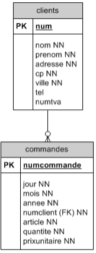Lequel signifie exactement la même chose que les deux phrases suivantes :
On appelle une "relation de 1 à N" entre la table clients et la table commandes.
À présent, une table de commandes s'ajoute à la table des clients. Comme on doit pouvoir retrouver le client de chaque commande, nous allons prévoir, parmi les attributs de la commande, un attribut obligatoire (non NULL) qui est une référence au client.
Nous allons à cet effet choisir une valeur qui permet de reconnaître le client de façon unique, sans risque d'ambiguité (même si la table des clients est augmentée par la suite !) : le nom du client ne suffit pas à identifier un client précis, et même son nom et son prénom ensemble pourraient être ambigus (il peut y avoir plusieurs Luc Dupuis !). Mais nous avons heureusement prévu ci-dessus de donner à chaque client un numéro, et nous avons même spécifié que ce numéro était une clé primaire, c'est-à-dire devait absolument être différent d'un client à l'autre : il suffit donc de remettre ce numéro de client dans le tuple relatif à une commande !
Cette mention du numéro du client dans la table des commandes constitue une clé étrangère (FOREIGN KEY en anglais). Le simple fait de spécifier cela dans le CREATE TABLE va assurer que, à aucun moment, la table des commandes ne contiendra un tuple dont le numéro de client ne soit pas celui d'un client présent dans la table des clients. Dans le DSD, numcient, la clé étrangère, doit être NOT NULL dans notre cas mai une clé étrangère ne doit pas d'office être NOT NULL.
CREATE TABLE commandes
(
numcommande INTEGER PRIMARY KEY,
jour INTEGER,
mois INTEGER,
annee INTEGER,
numclient INTEGER NOT NULL REFERENCES clients (num),
article VARCHAR(30),
quantite INTEGER,
prixunitaire INTEGER,
);
Voici un exemple de contenu de cette table :
| numcommande | jour | mois | annee | numclient | article | quantite | prixunitaire |
|---|---|---|---|---|---|---|---|
| 1 | 5 | 9 | 2000 | 1 | stylo M3 | 20 | 150 |
| 2 | 56 | 9 | 2000 | 18 | stylo M3 | 80 | 150 |
| 3 | 6 | 9 | 2000 | 18 | cartouche | 160 | 20 |
| 5 | 8 | 9 | 2000 | 3 | classeurL | 10 | 80 |
| 8 | 1 | 10 | 2000 | 1 | stylo M3 | 30 | 150 |
On peut à présent effectuer des recherches sur l'une ou l'autre des deux tables, ce qui n'est pas neuf, mais également sur les deux tables simultanément. On dit qu'on travaille sur la "jointure" des deux tables.
Exemple : je veux connaître pour chaque commande, l'article, la quantité et les nom et prénom du client.
SELECT commandes.article, commandes.quantite, clients.nom, clients.prenom
FROM commandes, clients
WHERE commandes.numclient = clients.num;| article | quantite | nom | prenom |
|---|---|---|---|
| stylo M3 | 20 | Dupuis | Benoit |
| stylo M3 | 80 | Van Moer | Willy |
| cartouche | 160 | Van Moer | Willy |
| classeurL | 10 | Dupuis | Luc |
| stylo M3 | 30 | Dupuis | Benoit |
On aura remarqué que les noms d'attributs sont précédés du nom de la table dont ils sont issus, en vue d'éviter les éventuelles ambiguités (au cas où deux tables auraient des attributs de même nom).
Dans le cas présent, il n'y a pas d'ambiguité possible, on aurait aussi écrire :
SELECT article, quantite, nom, prenom
FROM commandes, clients
WHERE numclient = num;Autre exemple : je veux connaître les commandes de septembre 2000 (n°, article, quantité) faites par des clients de Wavre, et pour chacune d'elles, le nom, le prénom et le numéro de téléphone du client qui l'a effectuée.
SELECT commandes.numcommande, commandes.article, commandes.quantite, client.nom, clients.prenom, clients.tel
FROM commandes, clients
WHERE commandes.numclient = clients.num AND commandes.annee = 2000 AND commandes.mois = 9 AND clients.ville = 'Wavre';| numcommande | article | quantite | nom | prenom | tel |
|---|---|---|---|---|---|
| 2 | stylo M3 | 80 | Van Moer | Willy | NULL |
| 3 | cartouche | 160 | Van Moer | Willy | NULL |
| 5 | classeurL | 10 | Dupuis | Luc | 010/34.65.67 |
Parmi les conditions qui suivent le mot WHERE, figure la "condition de jointure", qui permet de faire le lien entre un tuple d'une table et un tuple de l'autre, c'est-à-dire, dans notre exemple, entre une commande et son client. Cette condition est celle d'égalité des numéros de client des deux tables : commandes.numclient = clients.num.
Plutôt que de répéter les noms des tables, on peut avoir recours aux "alias". Par exemple :
SELECT CO.article, CO.quantite, CL.nom, CL.prenom
FROM commandes CO, clients CL
WHERE CO.numclient = CL.num;En l'absence de la condition de jointure, le système croise chaque tuple de commandes avec chaque tuple de clients, sans tenir compte de cette correspondance.
SELECT article, quantite, nom, prenom
FROM commandes, clients;| article | quantite | nom | prenom |
|---|---|---|---|
| stylo M3 | 20 | Dupuis | Benoit |
| stylo M3 | 20 | Dupuis | Luc |
| stylo M3 | 20 | Van Moer | Willy |
| stylo M3 | 80 | Dupuis | Benoit |
| stylo M3 | 80 | Dupuis | Luc |
| stylo M3 | 80 | Van Moer | Willy |
| cartouche | 160 | Dupuis | Benoit |
| cartouche | 160 | Dupuis | Luc |
| cartouche | 160 | Van Moer | Willy |
| classeurL | 10 | Dupuis | Benoit |
| classeurL | 10 | Dupuis | Luc |
| classeurL | 10 | Van Moer | Willy |
| stylo M3 | 30 | Dupuis | Benoit |
| stylo M3 | 30 | Dupuis | Luc |
| stylo M3 | 30 | Van Moer | Willy |
Pour comprendre le résultat, il faut se souvenir des règles ensemblistes en mathématique.
Puisqu'il y a 3 clients et 5 commandes, le produit cartésien de ces deux ensembles fournit 15lignes en résultat.
Effectivement, il faut multiple le nombre de lignes des deux ensembles : 3 clients * 5 commandes = 15 lignes résultantes !
Chaque tuple d'une table est mis en lien avec les tuples de l'autre table.
Dans le cas présent, ce query n'a aucn intérêt.
Mais le produit cartésien peut s'avérer intéressant dans certains cas. Supposons qu'une des clientes se prénomme Cerise et qu'il existe un article intitulé Cerise dans l'assortiment.
Que répondez-vous aux deux questions suivantes :
La première question est une requête avec jointure.
SELECT quantite
FROM commandes CO, clients CL
WHERE CO.numclient = CL.num AND CL.prenom = 'Cerise' AND CO.article = 'Cerise';Par contre, la réponse à la deuxième question fait intervenir un produit cartésien.
SELECT DISTINCT prenom
FROM clients, commandes
WHERE prenom = article;Je désire connaître le nombre de commandes réalisées pour des clients de Wavre ainsi que le montant total de celles-ci avec une rédution de 5%.
SELECT COUNT (CO.numcommande), SUM (CO.prixunitaire * CO.quantite) * 0.95
FROM commandes CO, clients CL
WHERE CO.numclient = CL.num AND CL.ville = 'Wavre';Ça va afficher ceci :
| count | ?Column? |
|---|---|
| 3 | 11780 |
Pour mettre un nom aux différentes colonnes, on utilise le mot AS. Ça donnera un truc comme ceci :
SELECT COUNT (CO.numcommande) AS "nombre de commandes", SUM (CO.prixunitaire * CO.quantite) * 0.95 AS "prix total"
FROM commandes CO, clients CL
WHERE CO.numclient = CL.num AND CL.ville = 'Wavre';Avec le mot AS, ça affichera ceci à la place :
| nombre de commandes | prix total |
|---|---|
| 3 | 11780 |
Je veux connaître le prénom des clients dont le nom est "Dupuis" qui ont commandé un article "classeurL".
SELECT DISTINCT CL.prenom
FROM commandes CO, clients CL
WHERE CO.numclient = CL.num AND CL.nom = 'Dupuis' AND CO.article = 'classeurL';On met le mot DISTINCT après le SELECT en se posant la question, "Suis-je certain qu'il n'y aura qu'un seul résultat ?" et que la réponse est NON.
Rappel mathématique : si A = B et B = C, alors A = C.
Ce principe s'applique également au SQL. Prenons les tables suivates :

Un client peut avoir plusieurs commandes et aussi plusieurs adresses de livraison. Les tables adresses_de_livraison et commandes ont la même clé étrangère numclient qui fait référence à la table clients.
Essayons de répondre à la requête suivante : quelles sont les commandes qui ont été livrées à l'adresse de livraison dont le numéro (numadresselivraison) est le 5 ?
SELECT DISTINCT CO.numcommande
FROM commandes CO, clients CL, adresses_de_livraison AL
WHERE CO.numclient = CL.num AND AL.numclient = CL.num AND AL.numadresselivraison = 5;La transitivité va nous permettre de simplifier cette requête en n'utilisant plus la table clients :
SELECT DISTINCT CO.numcmmande
FROM commandes CO, adresses_de_livraison AL
WHERE CO.numclient = AL.numclient AND AL.numadresselivraison = 5;Repartons de l'exemple des clients et des commandes. Le lecteur aura peut-être surpris de la façon dont les articles ont été traités jusqu'ici.
Nous voici donc amenés à créer une nouvelle table : celle des articles susceptibles d'être commandés (le catalogue des articles).
Outre les allègements et autres améliorations déjà mis en évidence, nous pourrions profiter de cette table pour assurer une tenue de stock : il suffira, pour chaque article, de mémoriser sous forme d'attribut la quantité totale en stock. On peut même y ajouter un seuil de recommande, c'est-à-dire la valeur minimale du stock en dessous de laquelle il nous faut nous-mêmes nous réapprovisionner auprès de notre fournisseur. (Exemple : s'il nous reste moins de 100 stylos M3, il est temps que nous en recommandions.)
La table des commandes ne contiendra plus les informations relatives à l'article, mais un numéro qui fait référence à un tuple de la table des articles.
Voici les nouvelles instructions de création de tables (la table des clients reste identique) :
CREATE TABLE articles
(
numart INTEGER PRIMARY KEY,
nomart VARCHAR(30),
prixunitaire INTEGER,
stock INTEGER,
seuil INTEGER,
);
CREATE TABLE commandes
(
numcommande INTEGER PRIMARY KEY,
jour INTEGER,
mois INTEGER,
annee INTEGER,
numclient INTEGER NOT NULL REFERENCES clients (num),
numart INTEGER NOT NULL REFERENCES articles (numart),
quantite INTEGER,
);Il y a deux relations 1 à N : entre clients et commandes d'une part, et entre articles et commandes d'autrepart. En effet :
entre clients et commandes :
entre articles et commandes :
Mais, entre clients et articles, il y a aussi une relation. On l'appelle une "relation M à N" car :
Signalons qu'on utilise le mot "article" pour désigner plutôt un "type d'article", ou encore un "élément du catalogue des articles", MAIS pas une pièce précise, pas un "article physique individuel".
Les relations M à N ne sont jamais représentées directement dans un diagramme de structure de données, elles le sont toujours par deux relations 1 à N, dirigées vers une troisième entité intermédiaire (commandes dans l'exemple).
Le contenu des tables commandes et articles pourraient être :
| numcommande | jour | mois | annee | numclient | numart | quantite |
|---|---|---|---|---|---|---|
| 1 | 5 | 9 | 2000 | 1 | 3 | 20 |
| 2 | 6 | 9 | 2000 | 18 | 3 | 80 |
| 3 | 6 | 9 | 2000 | 18 | 4 | 160 |
| 5 | 8 | 9 | 2000 | 3 | 5 | 10 |
| 8 | 1 | 10 | 2000 | 1 | 3 | 30 |
| numart | nomart | prixunitaire | stock | seuil |
|---|---|---|---|---|
| 1 | stylo M1 | 100 | 200 | 100 |
| 2 | stylo M2 | 130 | 125 | 100 |
| 3 | stylo M3 | 150 | 150 | 100 |
| 4 | cartouche | 20 | 950 | 200 |
| 5 | classeurL | 80 | 23 | 20 |
| 6 | classeur XL | 150 | 12 | 20 |
Voici quelques exemples de requêtes qui font appel aux trois tables.
SELECT DISTINCT CL.nom, CL.prenom, CL.num, COM.quantite
FROM clients CL, commandes COM, articles AR
WHERE CL.num = COM.numclient
AND COM.numart = AR.numart
AND CL.ville = 'Wavre'
AND COM.annee = 2000
AND AR.nomart = 'stylo M3';Ce qui signifie que l'on veut connaître les clients de Wavre qui ont commandé en l'an 2000 des stylos M3, et en quelle quantité.
Les deux première conditions derrièrele mot conditions de jointures, indispensables au bon fonctionnment de ce query. Le résultat affiché sera :
| nom | prenom | num | quantite |
|---|---|---|---|
| Van Moer | Willy | 18 | 80 |
SELECT COUNT (*), SUM (quantite)
FROM clients CL, commandes COM, articles AR
WHERE CL.num = COM.numclient
AND COM.numart = ART.numart
AND CL.nom = 'Dupuis'
AND (AR.prixunitaire > 50 OR COM.quantite > 100);On veut connaître, pour tous les clients qui s'appellent 'Dupuis', le nombre de commandes et le nombre total d'unités commandées, si on se limite aux commandes "importantes" (c'est-à-dire portant sur des articles à plus de 50 cents, ou sur des quantités de plus de 100 unités).
Réflexion : les parenthèses de la dernière ligne de cette instruction sont-elles indispensables ? Que passerait-il si on les ôtait ?
Jusqu'ici, une commande consistait à ce qu'un client donné commande un article donné en une quantité donnée à une certaine date. Si le même client voulait commander simultanément des stylos et des cartouches, il devait effectuer deux commandes; et si pour chaque commande on édite une facture, il reçoit deux factures ! Cela peut devenir lourd et gênant.
Aussi décide-t-on souvent d'appeler "commande" une liste d'articles qu'un client désire obtenir en quantités précises. Chaque commande sera subdivisée en lignes de commande (en référene aux formulaires de commande sur papier ou sur écran, dans lesquels chaque article commandé figure sur une nouvelle ligne).

Les tables des commandes et lignes de commandes sont les suivantes (les tables des clients et des articles étant inchangées) :
CREATE TABLE commandes
(
numcommande INTEGER PRIMARY KEY,
jour INTEGER,
mois INTEGER,
annee INTEGER,
numclient INTEGER NOT NULL REFERENCES clients (num),
);
CREATE TABLE lignes
(
numcommande INTEGER NOT NULL REFERENCES commandes (numcommande),
numligne INTEGER,
numart INTEGER NOT NULL REFERENCES articles (numart),
quantite INTEGER,
prix INTEGER,
PRIMARY KEY (numcommande, numligne),
);On constate une nouveauté : la clé primaire des lignes de commande est constituée de la concaténation de deux attributs, car c'est leur combinaison qui est unique.
Par exemple : il ne peut pas y avoir deux fois la ligne n°2 à la commande n°324; par contre, les commandes 327 et 328 peuvent avoir toutes deux une ligne n°2.
Le diagramme de structure de données est le suivant :

Exemples :
Si on n'a pas besoin des 4 tables dans certaines requêtes, on n'utilisera que celles qui sont nécessaires.
Quelles sont les lignes de commandes dont la quantité aatteint ou dépasse les 500 unités, et, pour chacune d'elles, donnez le nom du client, le libellé de l'article et la quantité commandée.
SELECT CL.nom, AR.nomart, LI.quantite
FROM clients CL, commandes COM, lignes LI, articles AR
WHERE CL.num = COM.numclient
AND COM.numcommande = LI.numcommande
AND LI.numart = AR.numart
AND LI.quantite >= 500;Quels sont les articles qui nous ont été commandés en août ou septembre 2000 et dont le stock actuel est situé en-dessous du seuil de recommande ?
SELECT AR.numart, ART.nomart, AR.stock
FROM commandes COM, lignes LI, articles AR
WHERE COM.numcommande = LI.numcommande
AND LI.numart = AR.numart
AND COM.annee = 2000
AND (COM.mois = 8 OR COM.mois = 9)
AND AR.stock < AR.seuil;Attention, si un article donné a été commandé plusieurs fois ces deux mois, on constatera que la ligne de résultat correspondant à cet article apparaîtra plusieurs fois dans le résultat. Le moyen d'éviter cela est bien sûr d'ajouter le mot-clé DISTINCT après le mot SELECT. L'instruction devient :
SELECT DISTINCT AR.numart, ART.nomart, AR.stock
FROM commandes COM, lignes LI, articles AR
WHERE COM.numcommande = LI.numcommande
AND LI.numart = AR.numart
AND COM.annee = 2000
AND (COM.mois = 8 OR COM.mois = 9)
AND AR.stock < AR.seuil;Remarquons que ce mot DISTINCT porte sur l'ensmeble de la ligne (et pas sur l'arttribut numart qui le suit immédiatement). Cela n'aurait pas de sens de répéter ce mot ailleurs.
Quelles sont les villes des clients qui ont commandé des cartouches en septembre 2000 ?
SELECT DISTINCT CL.ville
FROM clients CL, commandes COM, lignes LI, articles AR
WHERE CL.num = COM.numclient
AND COM.numcommande = LI.numcommande
AND LI.numart = AR.numart
AND AR.nomart = 'cartouche'
AND COM.annee = 2000
AND COM.mois = 9;Autre possibilité, on choisit comme clé primaire de la table ligne la concaténation des deux clés étrangères : numcommande et numart. Le choix d'une telle clé a pour conséquence qu'au sein d'une commande, il ne peut y avoir qu'une seule ligne par article. En d'autres termes, un article ne peut se trouver que dans une seule ligne de commande. Évidemment, ceci est plus contraignant.
Le CREATE TABLE ne diffère pas beaucoup de celui déjà présenté :
CREATE TABLE lignes
(
numcommande INTEGER NOT NULL REFERENCES commandes (numcommande),
numart INTEGER NOT NULL REFERENCES articles (numart),
quantite INTEGER,
prix INTEGER,
PRIMARY KEY (numcommande, numart),
);
Lorsqu'on fait une jointure avec une clé étrangère concaténée, il faut penser à faire la jointure sur tous les champs qui composent cette clé étrangère.
Prenons pour exemple le DSD (limité) suivant :
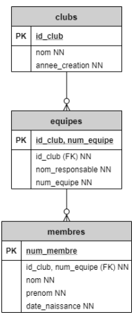Imaginons des clubs de foot. Dans chaque club de foot, il y a plusieurs équipes, et dans chaque équipe il y a un certian nombre de membres.
La FK de la table membres est une FK composite, faisant référence à la PK composite de la table equipes : id_club, num_equipe.
Pour afficher tous les membres de l'équipe numéro 5, il faudra écrire la requête suivante :
SELECT m.num_membre, m.nom, m.prenom
FROM membres m, equipes e
WHERE m.id_club = e.id_club
AND m.num_equipe = e.num_equipe
AND e.num_equipe = 5;Une sous-requête SELECT à l'intérieur d'une autre. Une sous-requête doit être placée à la suite d'une clause WHERE ou d'une clause HAVING (voir ci-dessous).
Le résultat de la sous-requête remplace une valeur ou un groupe de valeurs dans une condition.
SELECT *
FROM table1
WHERE table1.id | IN (SELECT table2.id FROM table2);
| NOT IN
| =
| NOT =
| Autres opérateurs <, > ...SELECT table2.id FROM table2 est la sous-requête. Une sous-requête s'exprime toujours entre parenthèses.
Exemples :
Quelles sont toutes les commandes de Mr Jean Dupont ?
SELECT numcommande
FROM commandes, clients
WHERE numclient = num
AND nom = 'Dupont'
AND prenom = 'Jean';Ou
SELECT numcommande
FROM commandées
WHERE numclient (SELECT num
FROM clients
WHERE nom = 'Dupont' AND prenom = 'Jean');Dans ce premier exemple, nous avons vu deux manières différentes d'écrire une requête. Dans un tel cas, l'emploi de la sous-requête n'est pas indispensable.
Dans l'exemple suivant, nous abordons un cas où l'emploi de la sous-requête est indispensable.
Quels sont les articles les plus chers, c'est-à-dire ceux dont le prix est égal au prix le plus élevé ?
SELECT numart, nomart
FROM articles
WHERE prixunitaire = (SELECT MAX (prixunitaire) FROM articles);L'objectif est d'efftuer des opérations de somme, comptage, moyenne, minimum ou maximum sur plusieurs groupes de tuples et non sur l'ensemble des tuples comme nous l'avons vu auparavant. C'est ce que l'on appelle une rupture de séquence.
Par exemple, si on désire compter le nombre de lignes de commande :
SELECT numcommande, COUNT (*)
FROM lignes
GROUP BY numcommande;On obtiendra autant de tuples dans le résultat qu'il y a de numéros de commandes différents.
Même exemple, mais en affichant la date de la commande.
SELECT lignes.numcommande, annee, mois, jour, COUNT (*)
FROM lignes, commandes
WHERE lignes.numcommande = commandes.numcommande
GROUP BY lignes.numcommande, annee, mois, jour;Le groupement, comme dans le cas précédent, se fera par commande. On groupe ensemble tous les tuples qui ont la même valeur pour les attributs figurant derrière les GROUP BY.
Dans le second exemple, l'ajout des attributs annee, mois et jour en fin d'instruction ne change rien au groupement, puisque si le numéro de commande est le même, la date sera forcément la même aussi, mais leur présence est exigée par SQL : en effet, tout attribut digurant hors d'une fonction d'agrégation après le mot SELECT doit aussi figurer derrière les mots GROUP BY.
La clause GROUP BY n'a d'intérêt que si l'on utilise au moins une fonction d'agrégation.
Autre exemple, on désire afficher le chiffre d'affaires (total de toutes les commandes) de chaque mois de l'année 2001 :
SELECT mois, SUM(prix * quantite)
FROM commandes, lignes
WHERE annee = 2001 AND commandes.numcommande = lignes.numcommande
GROUP BY moisMême chose, mais pour chaque mois de toutes les années :
SELECT annee, mois, SUM(prix * quantite)
FROM commandes, lignes
WHERE commandes.numcommande = lignes.numcommande
GROUP BY annee, moisQuel est le montant total payé par chaque client ?
SELECT numclient, SUM (prix * quantite)
FROM commandes, lignes
WHERE commandes.numcommande = lignes.numcommande
GROUP BY numclient;Même chose, mais en indiquant le nom du client :
SELECT CL.num, CL.nom, AVG (prix * quantite)
FROM commandes COM, clients CL, lignes
WHERE COM.numclient = CL.num
AND COM.numcommande = lignes.numcommande
GROUP BY CL.num, CL.nom;On peut aussi écrire, derrière le mot SELECT, des expressions contenant une ou plusieurs fonctions d'agrégation mais il va de soi que celles-ci ne figureront pas dans le GROUP BY.
HAVING permet d'élimiter certains tuples ou groupes de tuples du résultat.
La clause HAVING existe en SQL parce qu'il est impossble d'utiliser des fonctions agrégées dans le WHERE. Si une table a été groupée en utilisant la clause GROUP BY mais que seuls certains groupes sont intéressants, la clause HAVING peut être utilisée, comme une clause WHERE, pour éliminer les groupes du résultat.
Les expressions de la clause HAVING peuvent référer à la fois aux expressions groupées et aux expressions non groupées.
Exemple :
SELECT CL.num, CL.nom, SUM (prix * quantite)
FROM commandes COM, clients CL
WHERE COM.numclient = CL.num
GROUP BY CL.num, CL.nom
HAVING SUM (prix * quantite) > 10000;Nous avons maintenant découvert les premières instructions du langage SQL : CREATE TABLE, INSERT INTO et SELECT; dans la partie suivante du cours, nous allons nous pencher sur la manière de concevoir des bases de données. Nous nous attarderons donc à la réalisation des diagrammes de structures de données (DSD).
Dans la suite, on présente les exercices SQL cours de BD1. Il vous sera proposé d'effectuer des requêtes (queries) sur une base de données contenant des bandes dessinées.
Les séances d'exercices ont pour but de vous apprendre à créer une base de données, à y insérer des informations et ensuite à consulter de façon souple et puissante les informations ainsi stockées.
Les exercices se découpent en 4 niveaux progressifs :
Dans chaque niveau, les queries demandées sont également classés par ordre de difficulté croissante.
Le Système de Gestion de Bases de Données (SGBD) utilisé est PostgreSQL (http://www.postgresql.org/) qui est une base de données open source.
Le logiciel permettant d'exécuter les requêtes SQL avec PostgreSQL s'appelle pgAdmin (http://www.pgadmin.org/).
Il s'agit d'un logiciel qui permet d'exécuter des commandes SQL à travers une interface graphique (Windows) et donc relativement confortable.
Afin de réaliser ces exercices, vous disposez de 2 possibilités :
Imaginez une table SQL reprenant une liste de bandes dessinées ! Vous pouvez voir le contenu de cette table dans l'image suivante. Le contenu de la yanle vous permettra de déterminer le type de chaque attribut.
Votre table doit au moins contenir les attributs suivants :
L'ISBN (International Standard Book Number) ou numéro international normalisé du livre est un numéro international qui permet d'identifier, de manière unique, chaque livre publié. Il est destiné à simplifier la gestion informatique du livre : bibliothèques, libraires, distributeurs, etc. (Extrait de Wikipédia)
Lorsque, dans une requête, on demande les albums sans précision des champs désirés; cela signifie qu'on désire obtenir toutes les colonnes de la table.
Un auteur est soit un scénariste, soit un dessinateur, soit un coloriste.
Le DSD est :
| bd1.albums | |
|---|---|
| PK | isbn |
|
titre NN serie scenariste dessinateur coloriste pays prix NN editeur NN annee_edition |
Écrivez l'instruction CREATE TABLE en vue de la créer sur machine.
CREATE TABLE bd1.albums
(
isbn char (13) PRIMARY KEY,
titre character varying (50) NOT NULL,
serie character varying (20),
scenariste character varying (20),
dessinateur character varying (20),
coloriste character varying (20),
editeur character varying (20) NOT NULL,
pays character (1),
annee_edition integer,
prix double precision NOT NULL,
);Qu'est-ce que la PK ?
La PK est la clé primaire. Elle est toujours NOT NULL et unique.Remplissez votre table de deux ou tuples (reprenant des bandes dessinées réelles ou imaginaires). Donnez les instructions INSERT INTO.
Le contenu de la table bd1.albums :
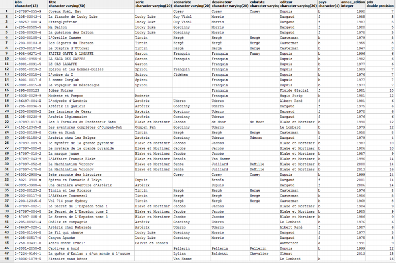INSERT INTO bd1.albums (isbn, titre, serie, scenariste, dessinateur, coloriste, éditeur, pays, annee_edition, prix)
VALUES ('2870970559', 'Joyeux Noël, May', NULL, 'Cosey', 'Cosey', 'Cosey', 'Dupuis', 'b', 1998, 7);
INSERT INTO bd1.albums (isbn, titre, serie, scenariste, dessinateur, coloriste, éditeur, pays, annee_edition, prix)
VALUES ('2205030434', 'La fiancée de Lucky Luke', 'Luky Luke', 'Guy Vidal', 'Morris', NULL, Dargaud, 'f', 1985, 5);Éccrivez une requête SQL qui permette d'afficher tout le contenu de votre table.
SELECT *
FROM bd1.albums;Donnez, pour chaque album, son isbn, son titre, son scénariste, son dessinateur ainsi que son année d'édition.
SELECT isbn, titre, scenariste, dessinateur, annee_edition
FROM bd1.albums;Quels sont les albums édités par "Dupuis" ?
SELECT *
FROM bd1.albums
WHERE editeur = 'editeur';Quels sont les titres des albums dont le scénariste est "Goscinny" ?
SELECT DISTINCT titre
FROM bd1.albums
WHERE scenariste = 'Goscinny';Quels sont les titres et les éditeurs des albums dont un des auteurs s'appelle "Uderzo" ?
SELECT DISTINCT titre, editeur
FROM bd1.albums
WHERE scenariste = 'Uderzo' OR dessinateur = 'Uderzo' OR coloriste = 'Uderzo';Quels sont les albums pour lesquels le coloriste n'a pas été spécifié ?
SELECT *
FROM bd1.albums
WHERE coloriste IS NULL;Quels sont les éditeurs qui ont édité des albums en 1978 ?
SELECT DISTINCT editeur
FROM bd1.albums
WHERE annee_edition = 1978;Quels sont les couples scénaristes-dessinateurs ayant travaillé pour l'éditeur "Dargaud" ? (Attention: si le nom du dessinateur est le mêm que celui du scénariste, c'est que la même personne a effectué les deux tâches, et on ne parlera donc pas de "couple".)
SELECT DISTINCT scenariste, dessinateur
FROM bd1.albums
WHERE scenariste != dessinateur AND editeur = 'Dargaud';Quels sont les albums dont le scénariste et le dessinateur sont la même personne, mais ont été mis en couleurs par quelqu'un d'autre ?
SELECT *
FROM bd1.albums
WHERE scenariste = dessinateur AND scenariste != coloriste;Quels sont les albums dont le scénariste, le dessinateur et le coloriste sont la même personne ?
SELECT *
FROM bd1.albums
WHERE scenariste = dessinateur AND scenariste = coloriste;Quels sont les albums qui n'ont qu'un seul auteur ? (Cela recouvre les cas de l'exercice précédent, mais il ne faut pas oublier les tuples pour lesquels un ou deux des trois attributs concernés ont la valeur NULL !)
SELECT *
FROM bd1.albums
WHERE (scenariste IS NOT NULL AND dessinateur IS NULL AND coloriste IS NULL) OR (scenariste IS NULL AND dessinateur IS NOT NULL AND coloriste IS NULL) OR (scenariste IS NULL AND dessinateur ISNULL AND coloriste IS NOT NULL) OR (scenariste = dessinateur AND scenariste = coloriste) OR (scenariste = desinateur AND coloriste IS NULL) OR (scenariste = coloriste AND dessinateur IS NULL) OR (dessinateur = coloriste AND scenariste IS NULL);Quels sont les scénariste dont on a édité, après 1990, des oeuvres qui coûtent moins de 8€ ?
SELECT DISTINCT scenariste
FROM bd1.albums
WHERE annee_edition > 1990 AND prix < 8;Quels sont les titres édités en dehors de la décennie 1990-1999, par un éditeur autre que "Casterman", et donc le coloriste est ou bien non spécifié ou bien le même que le dessinateur ?
SELECT DISTINCT titre
FROM bd1.albums
WHERE (annee_edition < 1990 OR annee_edition > 1999) AND editeur != 'Casterman' AND (coloriste IS NULL OR coloriste = dessinateur);Quels sont les titres qui n'ont été édités ni par "Casterman", ni par "Dupuis", et qui ont, comme scénariste, dessinateur et coloriste, trois auteurs distincts ?
SELECT DISTINCT titre
FROM bd1.albums
WHERE editeur != 'Casterman' AND editeur != 'Dupuis' AND scenariste != dessinateur AND scenariste != coloriste AND dessinateur != coloriste;Quels sont tous les albums qui rentrent dans une des catégories suivantes au moins :
SELECT *
FROM bd1.albums
WHERE (serie = 'Astérix' AND editeur = 'Dargaud') OR (serie = 'Tintin' AND (editeur = 'Casterman' OR editeur = 'Le Lombard')) OR (dessinateur IS NULL AND scenariste IS NULL AND coloriste IS NULL);Lister les titres des albums qui contiennent le mot "César".
SELECT DISTINCT titre
FROM bd1.albums
WHERE titre LIKE '%César%';Lister les coloristes dont le nom commence par le mot "de" (peu importe la casse).
SELECT DISTINCT coloriste
FROM bd1.albums
WHERE upper (coloriste) LIKE 'DE%';Donnez tous les titres de la série "Astérix" et leur année d'édition, en ordre chronologique (cd. année d'édition).
SELECT DISTINCT titre, annee_edition
FROM bd1.albums
WHERE serie = 'Astérix'
ORDER BY annee_edition;Donnez tous les titres des albums de la série "Astérix, en ordre alphabétique des titres.
SELECT DISTINCT titre
FROM bd1.albums
WHERE serie = 'Astérix'
ORDER BY titre;Donnez les albums (isbn, titre, nom d'éditeur et année d'édition) en classant ces données par éditeur, et pour chaque éditeur, par année d'édition.
SELECT isbn, titre, editeur, annee_edition
FROM bd1.albums
ORDER BY editeur, annee_edition;Donnez les titres et les prix des albums édités par "Dupuis", par ordre décroissant de prix.
SELECT DISTINCT titre, prix
FROM bd1.albums
WHERE editeur = 'Dupuis'
ORDER BY prix DESC;Quelle est la plus ancienne année d'édition de la table bd1.albums ?
SELECT MIN (annee_edition)
FROM bd1.albums;Quel est le prix de l'album le plus cher parmi ceux qui ont été dessinés par un autre dessinateur qu'"Uderzo" ?
SELECT MAX (prix)
FROM bd1.albums
WHERE dessinateur != 'Uderzo';Combien y a-t-il d'albums édités chez "Casterman" ?
SELECT COUNT (*)
FROM bd1.albums
WHERE editeur = 'Casterman';Combien d'années séparent l'album le plus ancien de l'album le plus récent ?
SELECT MAX (annee_edition) - MIN (annee_edition)
FROM bd1.albums;Combien devrais-je payer si j'achète 3 exemplaires de chacun des albums édités par "Blake et Mortimer" et si le libraire m'accorde une réduction de 25% ?
SELECT SUM (3 * prix) * 0.75
FROM bd1.albums
WHERE editeur = 'Blake et Mortimer';Les albums de la série "Tintin" ont-ils tous le même prix ? (le query pourrait par exemple renvoyer la valeur 1 si la réponse est oui)
SELECT COUNT (DISTINCT prix)
FROM bd1.albums
WHERE serie = 'Tintin';Combien y a-t-il de séries différentes dans la table bd1.albums ?
SELECT COUNT (DISTINCT serie)
FROM bd1.albums;Combien y a-t-il d'albums pour lesquels la série n'est pas spécifiée ? Peut-on répondre à cette question par un query sans clause WHERE ?
SELECT COUNT (serie)
FROM bd1.albums;Combien y a-t-il d'albums dont un des aureurs au moins s'appelle "Uderzo", et quelles sont les dates d'édition du plus ancien et du plus récent d'entre eux ?
SELECT COUNT (*), MIN (annee_edition), MAX (annee_edition)
FROM bd1.albums
WHERE dessinateur = 'Uderzo' OR scenariste = 'Uderzo' OR coloriste = 'Uderzo';Quel est le prix moten des albums édités par "Dupuis" entre 1990 et 1999 (y compris ces deux années extrêmes) ?
SELECT AVG (prix)
FROM bd1.albums
WHERE editeur = 'Dupuis' AND annee_edition >= 1990 AND annee_edition <= 1999;Si je veux acheter un exemplaire de tous les albums dont le scénariste est"Goscinny" et/ou le dessinateur " est "Uderzo", combien dois-je débourser ?
SELECT SUM (prix)
FROM bd1.albums
WHERE scenariste = 'Goscinny' OR dessinateur = 'Uderzo';Si veux acheter un exemplaire de tous les albums dont le scénariste n'est ni "Goscinny" ni "Uderzo", combien dois-je débourser ?
SELECT SUM (prix)
FROM bd1.albums
WHERE scenariste != 'Goscinny' AND scenariste != 'Uderzo';Les queries suivantes seront effectuées à partir d'une base de deux tables : une table des bd2.editeurs et une table des albums édités par chacun d'eux bd2.albums.
La structure des données est présentée ci-dessous :

Dans la table bd2.editeurs, chaque éditeur est identifié par un numéro (num) et contient un nom (qui ne peut pas être NULL), une adresse et un pays.
Dans table bd2.albums, le nom de l'éditeur est remplacé par ce numéro. Ce numéro fait ainsi référence à l'éditeur de l'album. Il est le lien entre un album et son éditeur.
Écrivez les deux instructions CREATE TABLE.
CREATE TABLE bd2.editeurs
(
num INTEGER PRIMARY KEY,
nom CHARACTER VARYING (20) NOT NULL,
adresse CHARACTER VARYING (30),
pays CHARACTER VARYING (1),
);
CREATE TABLE bd2.albums
(
isbn CHAR (13) PRIMARY KEY,
titre VARCHAR (50) NOT NULL,
serie CHARACTER VARYING (20),
scenariste CHARACTER VARYING (20),
dessinateur CHARACTER VARYING (20),
coloriste CHARACTER VARYING (20),
prix DOUBLE PRECISION NOT NULL,
nom_editeur INTEGER NOT NULL REFERENCES bd2.editeurs (num),
annee_edition INTEGER,
);Qu'est-ce que la FK ?
La FK (FOREIGN KEY) est la clé étrangère permet de faire le lien entre deux tables. En logique, elle référencie la PRIMARY KEY de l'autre table.Remplissez vos tables de deux ou trois tuples (reprenant des bandes dessinées réelles ou imaginaires).
Donnez les instructions INSERT INTO.
INSERT INTO bd2.editeurs (num, nom, adresse, pays)
VALUES (1, 'Albert René', NLL, 'f');
INSERT INTO bd2.editeurs (num, nom, adresse, pays)
VALUES (2, 'Dargaud', NULL, 'f');
INSERT INTO bd2.albums (isbn, titre, serie, scenariste, dessinateur, coloriste, num_editeur, annee_edition, prix)
VALUES ('2-8709-055-9', 'Joyeux Noël, May', NULL, 'Cosey', 'Cosey', 'Cosey', 4, 1998, 7);
INSERT INTO bd2.albums (isbn, titre, serie, scenariste, dessinateur, coloriste, num_editeur, annee_edition, prix)
VALUES ('2-205-83043-4', 'La fiancée de Lucky Luke', 'Lucky Luke', 'Guy Vidal', 'Morris', NULL, 2, 1985, 5);Donnez la liste des albums avec, pour chacun d'eux, l'isbn, le titre, le scénariste, le dessinateur et le numéro de l'éditeur.
SELECT BA.isbn, BA.titre, BA.scenariste, BA.dessinateur, BA.num_editeur
FROM bd2.albums BA;Donnez la liste des albums, avec, pour chacun d'eux, l'isbn, le titre, le scénariste, le dessinateur et le nom de l'éditeur.
SELECT BA.isbn, BA.titre, BE.nom
FROM bd2.albums BA, bd2.editeurs BE
WHERE BA.num_editeur = BE.num;Donnez la liste des albums dont l'éditeur est belge (isbn, titre et nom de l'éditeur).
SELECT BA.isbn, BA.titre, BE.nom
FROM bd2.albums BA, bd2.editeurs
WHERE BA.num_editeur = BE.num AND BE.pays = 'b';Donnez la liste des albums dont l'éditeur est belge sans la condition de jointure. (isbn, titre et nom de l'éditeur) Que constatez-vous ?
SELECT BA.isbn, BA.titre, BE.nom
FROM bd2.albums BA, bd2.editeurs BE
WHERE BA.num_editeur = BE.num AND BE.pays = 'b';
On remarque que toute la table est affichée comme aucune jointure, on a un produit cartésien avec les éditeurs belges : 44 albums * 5 éditeurs belges = 220 résultats.Quels sont les albums de la série "Astérix" qui n'ont pas été édités chez "Dargaud" ?
SELECT BA.*
FROM bd2_albums BA, bd2_editeurs BE
WHERE BA.num_editeur = BE.num AND BA.serie = 'Astérix' AND BE.nom != 'Dargaud';Quels sont tous les éditeurs (num et nom) qui ont été édité en 1999 des livres coûtant au moins 10€ ?
SELECT BE.num, BE.nom
FROM bd2.albums BA, bd2.editeurs BE
WHERE BA.num_editeur = BE.num AND BA.annee_edition = 1999 AND BA.prix >= 10;Chez quel(s) éditeur(s) (num et nom) "Goscinny" a-t-il des albums (en tant que scénariste, dessinateur ou coloriste) ?
SELECT DISTINCT BE.num, BE.nom
FROM bd2.albums BA, bd2.editeurs BE
WHERE BA.num_editeur = BE.num AND (BA.scenariste = 'Goscinny' OR BA.dessinateur = 'Goscinny' OR BA.coloriste = 'Goscinny');Quels sont les éditeurs (num et nom) localisés ailleurs qu'en Belgique ?
SELECT BE.num, BE.nom
FROM bd2.editeurs BE
WHERE BE.pays != 'b';Quels sont les albums qui ont été édités en Belgique ou en France, et qui ne sont ni des albums de la série "Tintin", ni des albums de la série "Astérix" ?
SELECT DISTINCT BA.*
FROM bd2.albums BA, bd2.editeurs BE
WHERE BA.num_editeur = BE.num AND (BE.pays = 'b' OR BE.pays = 'f') AND BA.serie != 'Tintin' AND BA.serie != 'Astérix';Donnez la liste des dessinateurs qui ont édités par "Dupuis". (Donnez-les en ordre alphabétique).
SELECT DISTINCT BA.dessinateur
FROM bd2.albums BA, bd2.editeurs BE
WHERE BA.num_editeur = BE.num AND BE.nom = 'Dupuis'
ORDER BY BA.dessinateur;Donnez la liste des albums édités par "Dupuis" entre 1990 et 2000 (bornes inclues), en affichant pour chacun son isbn, son titre, son dessinateur et son année d'édition. Triez le tout par dessinateur. Pour chaque dessinateur, les albums doivent être rangés en ordre chronologique.
SELECT BA.isbn, BA.dessinateur, BA.annee_edition
FROM bd2.albums BA, bd2.editeurs BE
WHERE BA.num_editeur = BE.num AND BE.nom = 'Dupuis' AND BA.annee_edition >= 1990 AND BA.annee_edition <= 2000
ORDER BY BA.dessinateur, BA.annee_edition;Chez quels éditeurs y a-t-il des albums pour lequel aucun auteur n'est fourni ?
SELECT DISTINCT BE.nom
FROM bd2.albums BA, bd2.editeurs BE
WHERE BA.num_editeur = BE.num AND BA.dessinateur IS NULL AND BA.scenariste IS NULL AND BA.coloriste IS NULL;Y a-t-il des albums pour lesquels le nom de l'éditeur est le même que celui de la série ? Listez les isbn des albums.
SELECT BA.isbn
FROM bd2.albums BA, bd2.editeurs BE
WHERE BA.num_editeur = BE.num AND BE.nom = BA.serie;Y a-t-il un éditeur qui porte le même nom q'un auteur ?
SELECT BE.nom
FROM bd2.albums, bd2.editeurs BE
WHERE BA.num_editeur = BE.num AND (BE.nom = BA.scenariste OR BE.nom = BA.dessinateur OR BE.nom = BA.coloriste);Combien y a-t-il d'albums édités en Belgique dont le dessinateur et le scénariste sont des personnes différentes ?
SELECT COUNT(BA.*) AS "nombre d'albums"
FROM bd2.editeurs BE, bd2.albums BA
WHERE BE.num = BA.num_editeur AND BA.dessinateur != BA.scenariste AND BE.pays = 'b';Quelle est l'année d'édition la plus ancienne pour les albums édités chez "Casterman" ?
SELECT MIN (BA.annee_edition AS "l'année la plus ancienne"
FROM bd2.albums BA, bd2.editeurs BE
WHERE BA.num_editeur = BE.num AND BE.nom = 'Casterman';Quelle est l'ancienneté moyenne des albums édités par des éditeurs belges ?
SELECT AVG (BA.annee_edition) AS "ancienneté moyenne"
FROM bd2.albums BA, bd2.editeurs BE
WHERE BA.num_editeur = BE.num AND BE.pays = 'b';Si je n'ai que 5€ en poche, quelle est l'année d'édition de l'album le plus ancien que je puisse acheter ?
SELECT MIN (BA.annee_edition)
FROM bd2.albums BA
WHERE BA.prix <= 5;Combien d'albums n'ont ni scénariste, ni dessinateur, ni coloriste mentionné ?
SELECT COUNT (BA.*) AS "nombre d'albums"
FROM bd2.albums BA
WHERE BA.scenariste IS NULL AND BA.dessinateur IS NULL AND BA.coloriste IS NULL;Quel est le prix moyen des albums édités en Belgique ?
SELECT AVG (BA.prix)
FROM bd2.albums BA, bd2.editeurs BE
WHERE BA.num_editeur = BE.num AND BE.pays = 'b';Combien dois-je débourser pour acheter tous les albums fançais qui coûtent moins de 8€ ? Et combien d'albums achètererai-je ainsi ? Quel sera leur prix moyen ?
SELECT SUM (BA.prix) AS "le montant des albums", COUNT (BA.*) AS "le nombre d'albums", AVG (prix) AS "le prix moyen"
FROM bd2.albums BA, bd2.editeurs BE
WHERE BA.num_editeur = BE.num AND BE.pays = 'f' AND BA.prix < 8;Combien d'année "Franquin" a-t-il écrit ?
SELECT MAX (BA.annee_edition) - MIN (BA.annee_edition) AS "les années de Franquin"
FROM bd2.albums BA
WHERE BA.scenariste = 'Franquin';Oscar a reçu pour son anniversaire l'album "Idées Noires" édité par le "Fluide glacial". Malheureusement, il possède déjà cet album; heureusement, il peut l'échanger contre un autre album du même prix. Contre quels albums peut-il échanger ?
SELECT DISTINCT BA1.*
FROM bd2.albums BA1, bd2.albums BA2, bd2.editeurs BE
WHERE BA2.num_editeur = BE.num AND BA2.titre = 'Idées Noires' AND BE.nom = 'Froid glacial' AND BA1.prix = BA2.prix AND BA1.isbn != BA2.isbn;
Ce schéma est une nouvelle variante de votre base de données permettant une souplesse supplémentaireà propos des auteurs. Jusqu'ici, un album avait exactement trois auteurs (ou moins de trois, si 2 d'entre eux, ou même les trois étaient identiques, ou encore si un ou plusieurs des champs scénariste, dessinateur ou coloriste avaient la valeur NULL).
Ceci ne permet pas d'être fidèle à la réalite, car dans certains cas il peut y avoir plusieurs co-dessinateurs, co-scénaristes, ou co-coloristes.
De plus, on pourrait vouloir ajouter plus d'informations sur les auteurs : leur adresse courrier et mail, leur n° de téléphone, etc.
On vous suggère donc de fournir d'une part la table des albums, d'autre part celle des auteurs, et enfin une troisième table qui réalise la relation M à N entre albums et auteurs. De cette façon, non seulement chaque auteur pourra participer à autant d'albums que l'on veut, mais également chaque album pourra avoir autant d'auteurs que l'on veut.
Cette troisième table devra contenir les deux clés étrangères (numéro du livre et numéro de l'auteur), plus un troisième attribut spécifiant le type de rôle joué par cet auteur dans le cadre de ce livre (scénariste, dessinateur, coloriste). Ce 3ème attribut aura la valeur 's', 'c' ou 'd'.
Remarquons que de nouveaux attributs pourraient être ajoutés à la table auteurs. Le fait d'avoir créé cette table auteurs nous permet d'ajouter toute une série d'informations concernant chacun des auteurs en ne les précisant qu'une seule fois. Nous apprendrons plus tard que cette structure nous permet ainsi d'éviter la redondance des données.
Écrivez les deux instructions CREATE TABLE des tables auteurs et participations.
CREATE TABLE bd3.editeurs
(
num INTEGER PRIMARY KEY,
nom VARCHAR (20) NOT NULL,
adresse VARCHAR (30),
pays CHAR (1),
);
CREATE TABLE bd3.albums
(
isbn CHAR (13) PRIMARY KEY,
titre VARCHAR (50) NOT NULL,
serie VARCHAR (20),
num_editeur INTEGER NOT NULL REFERENCES bd3.editeurs (num),
annee_edition INTEGER,
prix DOUBLE PRECISION NOT NULL,
);
CREATE TABLE bd3.auteurs
(
num INTEGER PRIMARY KEY,
nom VARCHAR (20) NOT NULL,
adresse VARCHAR (30),
e_mail VARCHAR (30),
);
CREATE TABLE bd3.participations
(
isbn CHAR (13) NOT NULL REFERENCES bd3.albums (isbn),
num_auteur INTEGER NOT NULL REFERENCES bd3.auteurs (num),
participe CHAR (1) NOT NULL CHECK (participeIN ('s', 'd', 'c')),
PRIMARY KEY (isbn, num_auteur, participe),
);Remplissez vos tables auteurs et participations.
INSERT INTO bd3.participations (isbn, num_auteur, participe) VALUES ('2-87097055-9', 14, 's');
INSERT INTO bd3.participations (isbn, num_auteur, participe) VALUES ('2-87097055-9', 14, 'd');
INSERT INTO bd3.participations (isbn, num_auteur, participe) VALUES ('2-87097055-9', 14, 'c');
INSERT INTO bd3.auteurs (num, nom, e_mail) VALUES (3, 'Hergé', 'tintin@hotmail.be');
INSERT INTO bd3.auteurs (num, nom, e_mail, adresse) VALUES (11, 'Van Hamme', 'van_hamme@hotmail.com', 'Bruxelles');Quel est le dessinateur de l'album dont le titre est "Astérix chez les Belges" ?
SELECT DISTINCT AU.*
FROM bd3.auteurs AU, bd3.participations PA, bd3.albums AL
WHERE AL.isbn = PA.isbn AND AU.num = PA.num_auteur AND AL.titre = 'Astérix chez les Belges' AND PA.participe = 'd';Pour quel(s) éditeur(s) a travaillé "Goscinny" ?
SELECT DISTINCT ED.*
FROM bd3.auteurs AU, bd3.participations PA, bd3.albums AL, bd3.editeurs ED
WHERE AL.isbn = PA.isbn AND AU.num = PA.num_auteur AND ED.num = AL.num_editeur AND AU.nom = 'Goscinny';Quels sont tous les auteurs qui ont travaillé comme dessinateurs et/ou coloristes chez l'éditeur "Dupuis" ?
SELECT DISTINT AU.*
FROM bd3.auteurs AU, bd3.participations PA, bd3.albums AL, bd3.editeurs ED
WHERE AL.isbn = PA.isbn AND AU.num = PA.num_auteur AND ED.num = AL.num_editeur AND ED.nom = 'Dupuis' AND (PA.participe = 'd' OR PA.participe = 'c');Combien d'auteurs (différentsà a-t-on répertoriés pour l'album "Coke en Stock" ? (Essayez aussi avec d'autres titre, en fonction du contenu de vos tables)
SELECT COUNT (DISTINCT PA.num_auteur)
FROM bd3.participations PA, bd3.albums AL
WHERE AL.isbn = PA.isbn AND AL.titre = 'Coke en Stock';Donnez les titres et les prix de tous les albums dessinés par "Uderzo" entre 1985 et 1995.
SELECT DISTINCT AL.titre, AL.prix
FROM bd3.auteurs AU, bd3.participations PA, bd3.albums AL
WHERE AL.isbn = PA.isbn AND AU.num = PA.num_auteur AND AU.nom = 'Uderzo' AND PA.participe = 'd' AND AL.annee_edition >= 1985 AND AL.annee_edition <= 1995;Quels sont les albums édités par "Casterman" pour lesquels on connaît le coloriste ?
SELECT DISTINCT AL.titre
FROM bd3.participations PA, bd3.albums AL, bd3.editeurs ED
WHERE AL.isbn = PA.isbn AND ED.num = AL.num_editeur AND ED.nom = 'Casterman' AND PA.participe = 'c';Quelle est l'année d'édition de l'album le plus récent ayant "Goscinny" parmi ses auteurs ?
SELECT MAX (AL.annee_edition)
FROM bd3.auteurs AU, bd3.participations PA, bd3.albums AL
WHERE AL.isbn = PA.isbn AND AU.num = PA.num_auteur AND AU.nom = 'Goscinny';Donnez la liste de tous les dessinateurs répertoriés, par ordre alphabétique.
SELECT DISTINCT AU.nom
FROM bd3.auteurs AU, bd3.participations PA
WHERE AU.num = PA.num_auteue AND PA.participe = 'd'
ORDER BY AU.nom;Donnez la liste de tous les dessinateurs répertoriés, par ordre alphabétique, mais en donnant en outre, pour chaque dessinateur, le nom de l'éditeur (ou : les noms des éditeurs) pour qui il a travaillé. Donnez la liste par ordre alphabétique de dessinateur, et, pour chacun d'eux, par ordre alphabétique d'éditeur.
SELECT DISTINCT AU.*, ED.nom
FROM bd3.auteurs AU, bd3.participations PA, bd3.albums AL, bd3.editeurs ED
WHERE AU.num = PA.num_auteur AND AL.isbn = PA.isbn AND ED.num = AL.num_editeur AND PA.participe = 'd'
ORDER BY AU.nom, ED.nom;Donnez les noms de tous auteurs qui ont collaboré, d'une façon ou d'une autre, à des albums de la série "Astérix avant 1992.
SELECT DISTINCT AU.nom
FROM bd3.auteurs AU, bd3.participations PA, bd3.albums AL
WHERE AU.num = PA.num_auteur AND AL.isbn = PA.isbn AND AL.serie = 'Astérix' AND AL.annee_edition < 1992;Quels rôles l'auteur "Cosey" a-t-il tenu dans "Zeke raconte des histoires" ?
SELECT DISTINCT PA.particpe
FROM bd3.auteurs AU, bd3.participations PA, bd3.albums AL
WHERE AU.num = PA.num_auteur AND AL.isbn = PA.isbn AND AU.nom = 'Cosey' AND lower (AL.titre) = 'zeke raconte des histoires';Quels rôles l'auteur "Uderzo" a-t-il tenus dans les albums édités par "Albert René" ?
SELECT DISTINCT PA.participe
FROM bd3.auteurs AU, bd3.participations PA, bd3.albums AL, bd3.editeurs ED
WHERE AU.num = PA.num_auteur AND AL.isbn = PA.isbn AND ED.num = AL.num_editeur AND lower (AU.nom) = 'uderzo' AND lower (ED.nom) = 'albert rené';Quels sont les auteurs qui ont joué plusieurs rôles (dessinateur, coloriste, ...) dans un même album ?
SELECT DISTINCT PA.num_auteur
FROM bd3.participation PA1, bd3.participations PA2
WHERE PA1.isbn = PA2.isbn AND PA1.num_auteur = PA2.num_auteur AND PA1.participe != PA2.participe;
ou
SELECT DISTINCT PA.isbn, AU.*
FROM bd3.auteurs AU, bd3.participations PA
WHERE AU.num = PA.num_auteur
GROUP BY PA.isbn, AU.num, AU.nom, AU.adresse, AU.e_mail
HAVING COUNT (PA.participe) > 1;Quels sont les albums qui ont été publiés en même temps que l'album dont le titre est "La marque jaune" ?
SELECT DISTINCT AL2.*
FROM bd3.albums AL1, bd3.albums AL2
WHERE AL1.isbn != AL2.isbn AND lower (AL1.titre) = 'la marque jaune' AND AL1.annee_edition = AL2.annee_edition;Donnez les séries édités chez "Dupuis", et pour chacune d'elles, le nombre d'albums.
SELECT AL.serie, COUNT (AL.isbn)
FROM bd3.albums AL, bd3.editeurs ED
WHERE AL.num_editeur = ED.num AND ED.nom = 'Dupuis' AND AL.serie IS NOT NULL
GROUP BY AL.serie;Quelles sont les dates du plus ancien et du plus récent album de chaque éditeur ?
SELECT ED.num, ED.nom, MIN (AL.annee_edition), MAX (AL.annee_edition)
FROM bd3.albums AL, bd3.editeurs ED
WHERE ED.num = AL.num_editeur
GROUP BY ED.num, ED.nom;Combien y a-t-il d'albums dessinés pour chaque dessinateur ?
SELECT AU.num, AU.nom, COUNT (PA.isbn)
FROM bd3.auteurs AU, bd3.participations PA
WHERE AU.num = PA.num_auteur AND PA.participe = 'd'
GROUP BY AU.num, AU.nom;DOnnez le nombre et le prix moyen des albums par année d'édition. Indiquez bien sûr l'année. Classez-le par ordre chronologique.
SELECT AL.annee_edition, COUNT (AL.isbn), AVG (AL.prix)
FROM bd3.albums AL
ORDER BY AL.annee_edition
GROUP BY AL.annee_edition;Pour chaque éditeur quia édité au moins un album de moins de 10€, affichez son num, son nom, sa nationalité, et le nombre de livres de moins de 10€ qu'il a publiés.
SELECT ED.num, ED.nom, ED.pays, COUNT (AL.isbn)
FROM bd3.albums AL, bd3.editeurs ED
WHERE ED.num = AL.num_editeur AND AL.prix < 10
GROUP BY ED.num, ED.nom, ED.pays;Pour quels éditeurs "Uderzo" a-t-il été dessinateur ? Pour chacun de ces éditeurs, donnez le nombre d'albums dessinés, et le prix du plus cher d'entre eux.
SELECT ED.num, ED.nom, COUNT (AL.isbn), MAX (AL.prix)
FROM bd3.auteurs AU, bd3.participations PA, bd3.albums AL, bd3.editeurs ED
WHERE AU.num = PA.num_auteur AND AL.isbn = PA.isbn AND ED.num = AL.num_editeur AND PA.participe = 'd' AND AU.nom = 'Uderzo'
GROUP BY ED.num, ED.nom;
ou
SELECT ED.num, ED.nom, COUNT (AL.isbn), MAX (AL.prix)
FROM bd2.albums AL, bd3.editeurs ED
WHERE ED.num = AL.num_editeur AND ED.num IN (SELECT AL2.num_editeur
FROM bd3.auteurs AU2, bd3.participations PA2, bd3.albums AL2
WHERE AU2.num = PA2.num_auteur AND AL2.isbn = PA2.isbn AND PA2.participe = 'd' AND AU.nom = 'Uderzo')
GROUP BY ED.num, ED.nom;Pour ces exercices, on se base sur la même base de données que celle du niveau 3; c'est-à-dire la bd3. Mais les questions sont complètement mixées; elles reposent parfois sur une seule table parfois sur les quatre.
La grande difficulté de ces exercices est de travailler (référencer dans le FROM) uniquement les tables nécessaires à la résolution de chaque query.
Parmi les exercices suivants, certains font appel à des notions qui n'ont pas été abordées au cours. Reprérez-les et éventuellement essayez de formuler la query en recherchant la solutions par vous-mêmes.
Vous remarquerez également que certaines queries sont bien plus faciles à résoudre dans les schémas des niveaux 1 (bd1) ou 2 (bd2). Mais, il faut les résoudre dans le schéma du niveau 3, c'est-à-dire bd3.albums, bd3.editeurs, etc. !
Combien y a-t-il d'albums pour chaque série ?
SELECT AL.serie, COUNT (AL.isbn)
FROM bd3.albums AL
WHERE AL.serie IS NOT NULL
GROUP BY AL.serie;Quels sont les éditeurs qui ont édité des albums en 1978 ?
SELECT ED.nom
FROM bd3.albums AL, bd3.editeurs ED
WHERE ED.num = AL.num_editeur AND AL.annee_edition = 1978;Combien y a-t-il d'albums par éditeur ?
SELECT ED.nom, COUNT (AL.isbn)
FROM bd3.albums AL, bd3.editeurs ED
WHERE ED.num = AL.num_editeur
GROUP BY ED.nom;Combien y a-t-il d'albums par scénariste ?
SELECT AU.nom, COUNT (AL.isbn)
FROM bd3.auteurs AU, bd3.participations PA, bd3.albums AL
WHERE AL.isbn = PA.isbn AND AU.num = PA.num_auteur AND PA.participe = 's';Combien y a-t-il d'albums par auteur ?
SELECT AU.nom, COUNT (DISTINCT AL.isbn)
FROM bd3.auteurs AU, bd3.participations PA, bd3.albums AL
WHERE AL.isbn = PA.isbn AND AU.num = PA.num_auteur
GROUP BY AU.nom;Quels sont les albums pour lesquels le coriste n'a pas été spécifié ?
SELECT AL.*
FROM bd3.albums AL
WHERE AL.isbn NOT IN (SELECT PA.isbn
FROM bd3.participations
WHERE PA.participe = 'c');Quels sont les scénaristes dont on a édités, après 1990, des albums qui coûtent moins de 8€ ?
SELECT AU.nom
FROM bd3.auteurs AU, bd3.participations PA, bd3.albums AL
WHERE AU.num = PA.num_auteur AND AL.isbn = PA.isbn AND AL.annee_edition > 1990 AND AL.prix < 8 AND PA.participe = 's';Donnez le nom de la série et le nombre d'albums de chaque série dessinées par "Franquin" ? Cette question peut être formulée autrement : pour tous les albums dont le dessinateur est "Franquin", combien y a-t-il d'albums de chaque série ?
SELECT AL.serie, COUNT (AL.titre)
FROM bd3.auteurs AU, bd3.participations PA, bd3.albums AL
WHERE AL.isbn = PA.isbn AND AU.num = PA.num_auteur AND AU.nom = 'Franquin' AND PA.participe = 'd' AND AL.serie IS NOT NULL
GROUP BY AL.serie;Donnez le prix moyen des albums par année d'édition, avec bien entendu l'année d'édition.
SELECT AL.annee_edition, AVG (AL.prix)
FROM bd3.albums AL
GROUP BY AL.annee_edition;Par série, combien y a-t-il de scénaristes pour les albums édités en Belgique ?
SELECT AL.serie, COUNT (DISTINCT PA.num_auteur)
FROM bd3.participations PA, bd3.albums AL, bd3.editeurs ED
WHERE PA.isbn = AL.isbn AND ED.num = AL.num_editeur AND PA.particippe = 's' AND ED.pays 'b' AND AL.serie IS NOT NULL
GROUP BY AL.serie;Quelle est l'année d'édition la plus ancienne pour les albums édités chez "Casterman" ?
SELECT MIN (AL.annee_edition)
FROM bd3.albums AL, bd3.editeurs ED
WHERE ED.num = AL.num_editeur AND ED.nom = 'Casterman';Quel est le prix moyen des albums édités en Belgique ?
SELECT AVG (AL.prix)
FROM bd3.albums AL, bd3.editeurs ED
WHERE ED.num = AL.num_editeur AND ED.pays = 'b';Quels sont les albums qui n'ont qu'un seul auteur ?
SELECT AL.*
FROM bd3.participations PA, bd3.albums AL
WHERE AL.isbn = PA.isbn
GROUP BY AL.*
HAVING COUNT (DISTINCT PA.num_auteur) = 1;Chez quels éditeurs y a-t-il des albums pour lesquels aucun auteur n'est spécifié ?
SELECT ED.nom
FROM bd3.albums AL, bd3.editeurs ED
WHERE ED.num = AL.num_auteur AND AL.isbn NOT IN (SELECT PA.isbn
FROM bd3.participations PA);Quelle est la première année où l'on a édité un album ayant été écrit par un auteur complet, c'est-à-dire où le scénariste, le dessinateur et le coloriste sont la même personne; aucun n'est inconnu, c'est-à-dire absent de la base de données ? Essayez également avec la table bd1.albums.
SELECT MIN (AL.annee_editiion)
FROM bd3.albums AL
WHERE 3 IN (SELECT COUNT (PA.participe)
FROM bd3.participations PA
WHERE PA.isbn = AL.isbn);Quel est le titre du moins cher des albums édités en 1977 ?
SELECT AL.titre
FROM bd3.albums AL
WHERE AL.annee_edition = 1977 AND AL.prix = (SELECT MIN (AL2.prix)
FROM bd3.albums AL2
WHERE AL2.annee_edition = 1977);Y a-t-il des albums différents portant le même titre ? Si oui, quels sont ces titres, et les années d'édition.
SELECT AL1.titre, AL.annee_edition
FROM bd3.albums AL1, bd3.albums AL2
WHERE AL1.isbn != AL2.isbn AND AL1.titre = AL.titre;Quels sont les dessinateurs qui ont travaillé sur des albuls de plusieurs séries ? Essayez également avec la table bd1.albums.
SELECT AU.nom, COUNT (DISTINCT AL.serie)
FROM bd3.auteurs AU, bd3.participations PA, bd3.albums AL
WHERE AL.isbn = PA.isbn AND AU.num = PA.num_auteur AND PA.participe = 'd'
GROUP BY AU.nom
HAVING COUNT (DISTINCT AL.serie) > 1;Donnez, pour chaque album ayant au moins un auteur répertorié, son isbn, son titre et le nombre d'auteurs différents intervenant dans cet album.
SELECT AL.isbn, AL.titre, COUNT (DISTINCT PA.num_auteur)
FROM bd3.albums AL, bd3.participatons PA
WHERE AL.isbn = PA.isbn
GROUP BY AL.isbn, AL.titre;Nous allons maintenant aborder la seconde partie du cours. L'objectif de celle-ci est de concevoir des bases de données.
Au départ d'un énoncé, nous allons rechercher les entités-clé et les modéliser sous forme d'un schéma appelé Diagramme de Structure de Données (DSD).
La conception de base de données est une démarche qui permet de réfléchir aux données afin de mémoriser finement l'information. Ceci nous permet :
Nous allons brièvement revoir la démarche que nous avions suivie pendant la première partie du cours pour évoluer d'une base de données contenant une seule table "albums" vers une base de données en contenant quatre : éditeurs, albums, auteurs et participations.
Ceci nous permettra d'introduire les contraintes d'intégrité et de passer en revue les concepts de clé primaire et de clé étrangère.
Nous verrons ensuite, dans le détail, les différents modèles de relations qui peuvent exister entre les tables et nous illusterons le problème de la prise en compte du temps dans les relations.
Nous donnerons, dans la foulée, les consignes pour organiser lisiblement le DSD.
Enfin, nous aborderons les tables spécialisées et les étapes de développement d'une application.
Nous terminerons cette partie du cours en évoquant la problématique de sauvegarde des données. La conception d'une DB exigeant que l'on chasse la redondance au maximum, nous pourrions entrevoir le concept de la normalisation dont on en reparlera dans la troisième partie du cours.
Dans la partie 1 (SQL), nous étions partis d'un exemple pour gérer les données des albums de bandes dessinées.
Nous avions créé une table albums correspondant à l'entité albums; chaque album dispose d'une information unique d'identification : le numéro isbn et les attributs suivants : titre, série, sénariste, coloriste, éditeur, pays d'édition, année d'édition et prix.
CREATE TABLE bd1.albums
(
isbn CHAR (13) PRIMARY KEY,
titre CHARACTER VARYING (50) NOT NULL,
serie CHARACTER VARYING (20),
scenariste CHARACTER VARYING (20),
dessinateur CHARACTER VARYING (20),
coloriste CHARACTER VARYING (20),
editeur CHARACTER VARYING (20) NOT NULL,
pays CHARACTER (1),
annee_edition INTEGER,
prix DOUBLE PRECISION NOT NULL,
);Dans notre notation DSD, cela donne :
Les clés primaires (PRIMARY KEY) sont soulignées. On indique la mention 'PK'.
Les champs obligatoires (NOT NULL) sont indiqués 'NN'.
| bd1.albums | |
|---|---|
| PK | isbn |
|
titre NN serie scenariste dessinateur coloriste editeur NN pays annee_edition prix NN |
Quelles étaient les contraintes de ce modèle ?
Le nom et le pays de l'éditeur sont répétés pour chaque album. Cette répétition peut entraîner les problèmes suivants :
Afin de solutionner les deux premiers problèmes (relatifs à l'éditeur), nous avons introduit une seconde entité : éditeurs. Une relation permet ensuite de joindre un éditeur à chaque album.
L'éditeur est identifié par un numéro unique. Il a des attributs nom et pays comme dans la solution bd1.albums auxquels nous avons ajouté un attribut adresse.
Dans la base de données, nous avions ajouté une table editeurs à laquelle faisait référence la table albums.
La nouvelle DB se présentait comme suit :
On indique la mention 'FK' à droite des clés étrangères (FOREIGN KEY).
Cela permet également de mémoriser des informations sur des éditeurs qui n'ont pas (encore) édités d'album.
Le lien entre les deux tables est assuré par une clé étrangère dans albums faisant référence à editeurs.
Ensuite, nous avons affiné le modèle pour résoudre les deux problèmes restants :
Était-il intéressant de créer trois scénaristes, dessinateurs et coloristes ? Non, cela aurait également introduit une duplication des données. Une même personne pouvant occuper chacun des rôles pour un même album ou pour des albums différents.
Nous avons donc introduit une entité auteurs et créé une table auteurs dans laquelle chaque auteur sera référencé.
Comme un auteur peut participer à plusieurs albums et qu'un album peut avoir plusieurs auteurs, nous avons introduit une table intermédiaire notée ici participations.
La table participations indique quel auteur intervient dans quel album. Il y a 3 types d'intervention possible matérialisée dans le champ participe : 's' pour scénariste, 'c pour coloriste et 'd' pour dessinateur.
Un tuple de participation est identifié par le numéro de l'auteur, l'ISBN de l'album et le rôle joué par l'auteur dans cet album.
Les 3 champs de participations ne peuvent donc jamais être NULL.
Ce modèle permet donc, comme le second :
Mais, en plus,
Exemple de contenu des tables :

Nous avons défini des clés primaires et des clés étrangères dans nos bases de données. Elles assurent la cohérence de la base de données. Nous allons voir par quels mécanismes.
Une clé primaire doit identifier chaque tuple d'une table de façon non ambiguë. C'est un identifiant unique et non nul. Cette contrainte d'intégrité permet de s'assurer de l'unicité d'un enregistrement pour une table.
Lorsqu'une entité dispose naturellement d'un identifiant unique, cet identifiant unique peut êtrechoisi comme clé primaire. Le numéro isbn peut être la clé primaire de la table albums.
Lorsqu'une entité ne dispose d'aucun identifiant unique ou par choix, on choisit un numéro auto incrémenté. Un numéro séquentiel unique est la clé primaire de la table editeurs.
Dans la table participation, la clé primaire est une concaténation de troischamps : isbn, num_auteur et participe qui permettent d'identifier de manière unique la participation d'un auteur à un album via son rôle.
L'intégrité référentielle garantit la cohérence des références entre tables.
Pour chaque information d'une table A qui fait référence à une information d'une table B, l'information référencée existe dans la table B.
Les contraintes d'intégrité référentielle garantissent donc la cohérence de la base de données.
Elles précisent les conditions dans lesquelles peuvent être ajoutés ou supprimés des enregistrements dans une table lorsqu'il existe des relations entre cette table et d'autres tables par l'intermédiaire de clés étrangères.
Cela signifie que :
Un 'enfant' ne peut référer un 'parent' que s'il existe.
Un 'parent' ne peut pas être supprimé s'il laisse des 'orphelins'.
Notons également que si la clé primaire est composée de plusieurs champs, il en sera forcément même pour les clés étrangères.
CREATE TABLE table1
(
cle_partie1 CHAR (4) NOT NULL,
cle_partie2 CHAR (3) NOT NULL,
...,
PRIMARY KEY (cle_partie1, cle_partie2),
);
CREATE TABLE table2
(
cle_table2 INTEGER PRIMARY KEY,
cle_etrangere_partie1 CHAR (4) NOT NULL,
cle_etrangere_partie2 CHAR (3) NOT NULL,
...,
FOREIGN KEY (cle_etrangere_partie1, cle_etrangere_partie2) REFERENCES table1 (cle_partie1, cle_partie2),
);Pour représenter un schéma, nous utilisons les conventions suivantes :
Graphiquement, une table est représentée de la sorte :

Lorsqu'un seul champ compose la clé primaire, il est indiqué uniquement dans l'espace réservé à cet effet.
Cela correspond au CREATE TABLE :
CREATE TABLE bd1.albums
(
isbn CHAR (13) PRIMARY KEY,
titre CHARACTER VARYING (50) NOT NULL,
serie CHARACTER VARYING (20),
...
);Lorsque plusieurs champs composent la clé primaire, leur concaténation est indiquée dans l'espace réservé à cet effet et chaque champ est repris avec ses propriétés dans la liste des champs.

Cela correspond au CREATE TABLE :
CREATE TABLE table1
(
cle_partie1 CHAR (4) NOT NULL,
cle_partie2 CHAR (3) NOT NULL,
...,
PRIMARY KEY (cle_partie1, cle_partie2),
);Lorsqu'un seul champ compose la clé étrangère, le mot-clé FK est indiqué immédiatement derrière ce champ.
Cela correspond au CREATE TABLE :
CREATE TABLE bd3.albums
(
isbn CHAR (14) PRIMARY KEY,
titre CHARACTER VARYING (50) NOT NULL,
serie CHARACTER VARYING (20),
num_editeur INTEGER NOT NULL REFERENCES bd3.editeurs (num),
...
);Lorsque plusieurs champs composent la clé étrangère, chaque champ est repris avec ses propriétés dans la liste des champs et leur concaténation est ensuite indiquée avec le mot-clé FK.
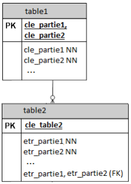Cela correspond au CREATE TABLE :
CREATE TABLE table1
(
cle_partie1 CHAR (4) NOT NULL,
cle_partie2 CHAR (3) NOT NULL,
...,
PRIMARY KEY (cle_partie1, cle_partie2),
);
CREATE TABLE table2
(
cle_table2 INTEGER PRIMARY KEY,
etr_partie1 CHAR (4) NOT NULL,
etr_partie2 CHAR (3) NOT NULL,
...,
FOREIGN KEY (etr_partie1, etr_partie2) REFERENCES table1 (cle_partie1, cle_partie2),
);De la même manière, lorsqu'un champ est unique, le mot-clé unique est indiqué immédiatement après ce champ. Lorsque la concaténation de plusieurs champs est unique, chaque champ est repris avec ses propriétés dans la liste des champs et leur concaténation est ensuite indiquée avec le mot-clé unique. Dans l'exemple ci-dessous, on remarque que le mot-clé unique est combiné avec le mot-clé FK.

Cela correspond au CREATE TABLE :
CREATE TABLE table1
(
cle_partie1 CHAR (4) NOT NULL,
cle_partie2 CHAR (3) NOT NULL,
...,
PRIMARY KEY (cle_partie1, cle_partie2),
);
CREATE TABLE table2
(
cle_table2 INTEGER NOT NULL,
etr_partie1 CHAR (4) NOT NULL,
etr_partie2 CHAR (3) NULL,
...,
FOREIGN KEY (etr_partie1, etr_partie2) REFERENCES table1 (cle_partie1, cle_partie2),
UNIQUE (etr_partie1, etr_partie2),
);Certaines règles simples permettent de structurer le dessin pour qu'il devienne un support fiable à la conception.

Un client peut passer plusieurs commandes d'articles. Un client est identifié par un numéro unique de client. Ce numéro peut être fourni par le système(un champ auto incrémenté par le SGBD) par un programme ou encore par l'utilisateur. On ajoutera plusieurs champs : le nom, l'adresse, le numéro de téléphone, ...
Une commande est identifiée par un numéro de commande (clé primaire qui peut être également un numéro séquentiel ou un champ plus complexe...). On ajoutera d'autres champs pour indiquer la date de la commande, l'état (pour le suivi), et un numéro de facture (dans l'hypothèse simpliste où à une commande correspond une seule facture).
Il faut en outre faire le lient avec le client. Plutôt que de répéter les informations du client nécessaires à la commandes, on établira un lien avec la table clients en mémorisant ici le numéro du client concerné. Ce champ était une clé primaire dans la table client, c'est une clef étrangère dans la table commande (FK).
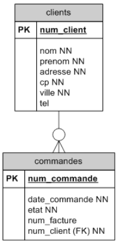Le symbole -o∊ montre une relation 1 : 0-N. Cette relation se lit dans les deux sens :
On pourrait dire qu'un client n'est enregistré qu'au moment où il passe une première commande d'articles. Il pourra passer plusieurscommandes d'articles.
Le symbole -∊ montre une relation 1 : 1-N. Cette relation se lit dans les deux sens :

Une commande peut référencer éventuellement une facture. Pour le moment, la facture est considérée comme un attribut de la commande. Envisagons la nécessité d'en créer une entité à part entière. Nous avons donc deux tables : commandes et factures.
Une commande référence éventuellement une facture. Une facture référence toujours une commande mais on ne retirnt pas cette information.
La relation est donc facultative. Dans la table commandes, la clé étrangère sera donc annotée NULL et graphiquement on ajoutera un petit rond à l'extrémité de l'association.
Le symbole -o montre une relation 1 : 0-1. Cette relation se lit dans les deux sens :

Cette relation peut également être représentée par une clé étrangère du côté de la facture :

Afin de s'assurer que deux ou plusieurs commandes ne référencent pas le même numéro de facture, on peut noter une contrainte d'unicité sur le champ facture (noté ici unique.
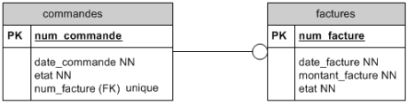Et réciproquement,
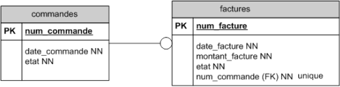Si on considère qu'à chaque commande correspondra nécessairement une facture, il faut ajuster le diagramme afin de relier les tables commandes et factures avec une relation 1 à 1.
Le symbole - montre une relation 1:1. Cette relatin se lit dans les deux sens :
Pour que le SGBD puisse facilement garantir la relation 1 à 1, il est conseillé d'utiliser la même clé primaire dans les deux tables, quand c'est possible.
On utilise dans ce cas la clé primaire de la table commandes également comme clé primaire pour la table factures. Dans la table commandes, on n'indique aucun clé étrangère. Une facture ser identifiée par un numéro de commande.

→ Remarquons qu'il serait plus judicieux d'utiliser le numéro de facture qui est un élément idispensable d'une facture en bonne et due forme.

On peut combiner les terminaisons de relations supportées par le SGBD.
Le symbole o-o montre une relation 0-1 : 0-1.Cette relation se lit dans les deux sens :
Le symbole o-o∊ montre une relation 0-1 : 0-N.
Le symbole o-∊ montre une relation 0-1 : 1-N.
Une commande peut porter sur plusieurs articles. Un article peut faire partie de plusieurs commandes.
C'est une relation M à N.
Le SGBD ne peut pas implémenter cette relation directement mais le fait par le biais de deux relations 1 : N.
Cela exige donc la création d'une nouvelle entité intermédiaire.
Concrètement, on sera obligé de créer une table pour mémoriser le fait que dans une même commande, on rencontre plusieurs articles mais qu'un même article peut, bien entendu, être commandé plusieurs fois.
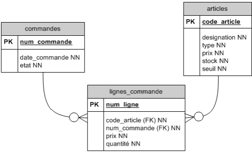La clé étrangère peut être à NULL pendant un certain temps et définie par la suite.
Prenons l'exemple du carnet de rendez-vous d'un cabinet médical. Ce cabinet est composé d'une dizaine de médecins qui ont une grille de rendez-vous qui s'échelonnent toutes les demi-heures. Les médecins prestent seulement certains jours ou demi-jours dans ce cabinet et parfois de façon irrégulière.
La secrétaire encode au départ les disponibilités de chaque médecin et puis fixe les rendez-vous avec les patients sur base de celles-ci.
Évolution de la construction du DSD :
On prévoit les disponibilités de chaque médecin :

Remarque : vu la convention que nous adoptons (nom d'une table toujours au pluriel), nous préférerons rendez-vous comme nom pour la table.
Aussi longtemps que la plage du planning n'est pas attribuée à un patient, la clé étrangère num_sis de la table rendez-vous reste à NULL.

Lorsqu'un patient prend le rendez-vous disponsible, la clé étrangère est indiquée. Il se pourrait que certains rendez-vous ne soient jamais attribués.
Exemple : un grossiste effectue des livraisons à ses clients tout au long du mois en fonction de leurs commandes. À la fin du mois, toutes ces livraisons sont facurées en une seule fois. La facture d'un client regroupe donc toutes les livraisons effectuées à ce client durant le mois.

Cet exemple démontre bien l'importance de nommer les relations dans certains cas. Il est une nouvelle illustration d'une clé étrangère de valeur NULL.
Entre les entités clients, il exite deux relations différentes. Celles-ci pourraient être de cardinalité différente (voir plus loin).
On peut noter que certains champs pourraient également servir d'identifiant unique. On peut en faire des index uniques (notés ici idx_unique).
Un index est une propriété d'une colonne de la base de données permettant de l'indexer dans le but d'améliorer l'accès aux données par le SGBD. Tout comme l'index dans un livrequi permet de retrouver plus facilement l'information, l'index unique impose l'unicité de l'indexation; il permet d'identifier chaque tupled'une table de façon non ambiguë.
Une table donnée peut avoir deux relations M à N avec deux tables différentes (et beaucoup si nécessaire).
Voici un DD qui illustre ce propos :
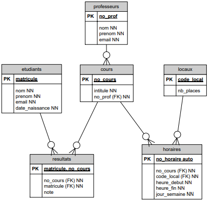La même table cours participe à deux relations M à N différentes.
Dans l'enseignement secondaire, les élèves sont regroupés par niveaux d'étude (ou années).
Une classe regroupe plusieurs élèves, en général entre 12 et 25.
Le programme de cours prévoit 32 heures de cours par élève. Outre les cours obligatoires, l'élève doit choisir et s'inscrire à des cours à option. Un cours est organisé pour minimum 8 élèves.
Un professeur donne 19 heures de cours, parfois il peut accepter de donner jusqu'à 4 heures supplémentaires, parfois il doit accepter un temps partiel.
Un cours n'est attribué qu'à un seul professeur.
Parmi les professeurs, on choisit un titulaire de classe. Il arrive qu'un professeur soit titulaire de 2 classes.
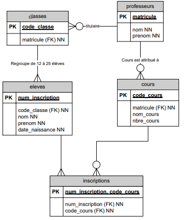Dans ce diagramme, plusieurs entités ont deux relations différentes entre elles : une classe a un professeur titulaire et un seul mais une classe a plusieurs professeurs qui lui donnent cours. Ces mêmes professeurs donnent cours à d'autre classes.
Si entre les entités clients et commandes, il y a une relation 1 à N et si entre les entités commandes et lignes_commande, il y a aussi une relation 1 à N, il existe alors une relation 1 à N déduite entre clients et lignes_commande. Il est inutile de la dessiner.

Le cas typique de ce genre de relation est la table où l'on désire mémoriser des services d'une institution organisée hiérarchiquement.
La direction comprend, entre autres, un service juridique. Celui-ci se décompose en service juridique du personnel et service juridique commercial ainsi que le contentieux. Le service juridique contentieux gère les conflits et les procès pour la Belgique et l'étranger; deux sous services sont donc créés, etc.

Cette hiérarchie sera mémorisée comme suit :
| Code service | Nom service | Responsable du service | Code service supérieur |
|---|---|---|---|
| 0 | Direction générale | Dupuis | - |
| 1 | Juridique | Janssens | 0 |
| 2 | Personnel | Durand | 1 |
| 3 | Commercial | Carlot | 1 |
| 4 | Contentieux | Van Camp | 1 |
| 5 | Belge | André | 4 |
| 6 | Etranger | Michel | 4 |
| 7 | UE | Van den Berg | 6 |
| 8 | Hors UE | Lee | 6 |
Représentation :
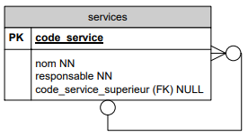C'est le cas typique de structure d'assemblage. Une pièce peut être composée de plusieurs pièces et une même pièce peut être un composant de plusieurs pièces.
Représentation :

Par exemple, une foreuse est composée d'un accumulateur, d'un moteur et d'un interrupteur.
Pièces :
| no_piece | nom | description |
|---|---|---|
| B72 | FACC72 | Foreuse sur Accus 7.2 V modèle Brico |
| P72 | PACC72 | Foreuse sur Accus 7.2 V modèle professionnel |
| B96 | FACC96 | Foreuse sur Accus 9.6 V modèle Brico |
| P96 | PACC96 | Foreuse sur Accus 9.6 V modèle professionnel |
| A72 | ACC72 | Accus 7.2V |
| A96 | ACC96 | Accus 9.6 V |
| M72 | MOT72 | Moteur 7.2 V |
| M96 | MOT96 | Moteur 9.6 V |
| IP | INTPROF | Interrupteur Brico |
| IB | INTPROF | Interrupteur Brico |
Composants :
| no_piece_composee | no_piece_composante |
|---|---|
| B72 | A72 |
| B72 | IB |
| B72 | M72 |
| P72 | A72 |
| P72 | IP |
| P72 | M72 |
Dans cet exemple, on constate qu'entre le modèle bricolage et professionnel, seul l'interrupteur change.
On désire mettre en place un système de parrainage des étudiants de 1ère et même de 2ème année par d'autres étudiants plus expérimentés (d'une année supérieure). Un étudiant pourrait demander des explications sur des matières plus difficiles à son parrain.
On souhaite mémoriser qui parraine qui.
Première hypothèse : un étudiant (parrain) pourrait parrainer plusieurs autres étudiants (ses filleuls) mais un filleul n'aurait qu'un seul parain.
Deuxième hypothèse : un filleul pourrait avoir plusieurs parrains plus ou moins spécialisés suivant les matières en question.
Pour chaque hypothèse, construisez une DB (DSD) et écrivez un SELECT SQL.
DSD de la première hypothèse :

DSD de la deuxième hypothèse :

Partons d'une table décrivant les articles vendus par une société :
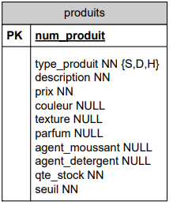Le champ type_produit de la table produits contient le char 'S' pour savon, 'D' pour détergent et 'H' pour shampoing.
Les autres champs de cette table sont remplis selon le type de produits :
Dans le cas d'un savon par exemple, les champs agent_moussant et agent_detergent resteront vides (NULL). En fait, suivant le type de produit, l'enregistrement devrait avoir une structure différente.
Une solution plus claire est de définir 3 tables spécialisées (une par type de produits) en plus de la table générale des produits.

Dans cet exemple, un produit est soit un savon, soit un shampoing, soit un détergent. Nous allons donc créer :
un tuple dans la table correspondant au type_produit :
La clé primaire des tables spécialisées est la même que la clé primaire de la table générale.
Cependant, il peut arriver que des clés primaires différentes existent. C'est ce que nous allons voir dans l'exemple suivant.
Au service central d'une université, on décide d'enregistrer toues les membres de l'université dans une seule table personnes, spécialisée en deux tables etudiants et professeurs. Les professeurs sont identifiés par un numéro de matricule tandis que les étudiants sont identifiés par leur numéro d'inscription.
Voici deux manières de représenter cette situation :
Solution 1 :
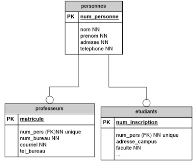Solution 2 :

Une personne peut être présente dans les deux tables spécialisées. Dans cette université, certains étudiants de doctorat ont déjà des charges académiques et sont donc considérés à la fois comme des étudiants et comme des professeurs.
La sauvegarde est l'opération qui consiste à mettre en sécurité les données contennues dans un sytème informatique. Ce terme est proche de deux notions :
Les copies de sûreté sont utiles principalement à deux choses :
La technique la plus fréquente est la copie des données sur un support indépendant du système initial (serveur distant, bandes magnétiques...).
L'opération inverse qui consiste à réutiliser des données sauvegardées s'appelle une restauration.
L'archivage vise à désengorger des tables de mouvements, souvent volumineuses et rapidement périmées.
Pour des raisons légales ou pour répondre à des demandes de statistiques, les données sont conservées plus longtemps. On stocke alors les données dans une DB séparée ou dans un data warehouse (Big data; business intelligence (informatique décisionnelle)).
La première façon de manipuler de telles bases de données est d'utiliser un langage algébrique basé sur plusieurs opérateurs. Ci-dessous, sont proposés cinq opérateurs de base, suivi de quatre autres (qui ne sont pas indispensables car ils peuvent s'écrire au moyen des cinq premiers, mais augmentent le confort de manipulation).
L'union de deux tables R et S, que l'on notera R ∪ S, est l'union au sens ensembliste des tuples des deux tables. Pour que le résultat soit encore une table, il faut que R et S comportent le même nombre de colonnes, et que si les colonnes ont des noms d'attributs, ces noms soient identiques et que les colonnes qui se correspondent dans les deux tables aient des domaines (ou au moins compatibles).
Il s'agit ici de la différence au sens ensembliste de tuples de deux tables. Les mêmes restrictions s'appliquent que pour l'union. On notera R - S ou R \ S.
Si R est une table comportant r colonnes et S une table comportant s colonnes, leur produit cartésien RxS est une table comportant r+s colonnes héritant leurs noms d'attributs de ceux de R et S, et contenant pour tuples tous les tuples que l'on peut obtenir en juxtaposant un tuple de R et un tuple de S. Si R contient n tuples et que S en contient p, RxS en contiendra nxp. Si des attributs de R et S ont même noms, on les distinguera en mentionnant la table d'origine : R.i, S.i.
Si i,j,...,k sont des numéros de colonnes ou des noms d'attributs d'une table R, l'opérateur unaire de projection sur i,j,...,k est défini comme suit : la table πi,j,...,k (R) est obtenue à partir de R en ne conservant que les colonnes i,j,...,k, et bien sûr en supprimant du résultats les éventuels tuples qui seraient identiques à d'autres.
Soit R une table, et F une formule logique constituée :
Alors l'opérateur de sélection est définies comme suit : la table σF(R) est la table comportant les mêmes attributs que R, et contenant les tuples de R qui satisfont à la condition F (c'est-à-dire qui donnent la valeur TRUE à F si on y remplace les nomms d'attributs par les valeurs prises par ces attributs dans le tupke concerné).
L'intersection R ∩ S est définiede façon similaire à l'union. Rappelons que : R ∩ S = R - (R - S).
Soient R et S deux tables contenant respectivement r et s colonnes, avec s < r. Supposons en outre que les noms d'attributs de S forment un sous-ensemble de ceux de R et queS ne soit pas vide. On définira le quotient R : S comme étant la table comportant r-s attributs (ayant pour noms ceux de la table R qui sont absents de la table S), et contenant comme tuples t ceux pour lesquels, pour tout tuple u de S, la combinaison "tu" soit dans R.
On peut définir cet opérateur à partir des cinq premiers de la façon suivante : si i,j,...,k sont les attributs présents dans R mais absents de S, on a :
R : S = πi,j,...,k (R) - πi,j,...,k (R) x S) - R).
Si i est un attribut de R et j un attribut de S, la jointure R JOINi=j S est la table obtenue en prenant le produit cartésien de R et S, dont ne conserve que les tuples pour lesquels les valeurs de l'attribut R.i et de l'attribut S.j sont égales. On peut de même définir des jointures basées sur d'autres opérateurs de relation (par exemple : R JOINi<j S) ou sur des conditions combinées (par exemple : R JOIN(i=j and k≠l) S).
Le cas où l'opérateur d'égalité "=" est le seul présent est appelé "équijointure".
La jointure naturelle de deux tables R et S comportant un ou plusieurs attributs identiqes (mêmes noms et mêmes domaines) est la table R JOIN S obtenue en effectuant tout d'abord une équijointure selon les attributs provenant de S qui sont des duplicatas d'attributs provenant de R.
Exemples :
| Nom | Destination | Code-dépl |
|---|---|---|
| Dufour | Paris | 321 |
| Dufour | Milan | 325 |
| Durand | Paris | 360 |
| Dutoit | Paris | 322 |
| Dutoit | Paris | 312 |
| Dutoit | Oslo | 319 |
| Nom |
|---|
| Dutoit |
| Dufour |
| Nom | Destination | Code-dépl |
|---|---|---|
| Dufour | Paris | 321 |
| Dufour | Milan | 325 |
| Durand | Paris | 588 |
| Janssens | Prague | 322 |
| Nom | Rembours |
|---|---|
| Dufour | 2 |
| Dutoit | 4 |
| Janssens | 0 |
| Albrecht | 2 |
| Fanuel | 3 |
| Nom | Destination | Code-dépl |
|---|---|---|
| Dufour | Paris | 321 |
| Dufour | Milan | 325 |
| Durand | Paris | 360 |
| Dutoit | Paris | 322 |
| Dutoit | Paris | 312 |
| Dutoit | Oslo | 319 |
| Durand | Paris | 588 |
| Janssens | Prague | 322 |
| Nom | Destination | Code-dépl |
|---|---|---|
| Durand | Paris | 360 |
| Dutoit | Paris | 322 |
| Dutoit | Paris | 312 |
| Dutoit | Oslo | 319 |
| R.Nom | Destination | Code-dépl | T.Nom | Rembours |
|---|---|---|---|---|
| Dufour | Paris | 321 | Dufour | 2 |
| Dufour | Paris | 321 | Dutoit | 4 |
| Dufour | Paris | 321 | Janssens | 0 |
| Dufour | Paris | 321 | Albrecht | 2 |
| Dufour | Paris | 321 | Fanuel | 3 |
| Dufour | Milan | 325 | Dufour | 2 |
| ... | ... | ... | ... | ... |
| Dufour | Oslo | 319 | Fanuel | 3 |
| Nom | Destination | Code-dépl | Rembours |
|---|---|---|---|
| Dufour | Paris | 321 | 2 |
| Dufour | Milan | 325 | 2 |
| Dutoit | Paris | 322 | 4 |
| Dutoit | Paris | 312 | 4 |
| Dutoit | Oslo | 319 | 4 |
| Nom | Destination |
|---|---|
| Dufour | Paris |
| Dufour | Milan |
| Durand | Paris |
| Dutoit | Paris |
| Dutoit | Oslo |
| Nom | Rembours |
|---|---|
| Dufour | 2 |
| Janssens | 0 |
| Albrecht | 2 |
Les notations ensemblistes permettent d'atteindre les mêmes résultats. Ainsi, pour les exemples qui précèdent, on pourrait utiliser les notations équivalentes suivantes :
R ∪ S = { t | t ∊ R ou t ∊ S }
R - S = { t | t ∊ R et t ∉ S }
R x T = { (R.Nom, Destination, Code-dépl, T.Nom, Rembours) | (R.Nom, Destination, Code-dépl) ∊ R et (Nom, Rembours) ∊ T }
R JOIN T = { (Nom, Destination, Code-dépl, Rembours) | (Nom, Destination, Code-dépl) ∊ R et (Nom, Rembours) ∊ T }
ou encore
R JOIN T = { (Nom, Destination, Code-dépl, Rembours) | (R.Nom, Destination, Code-dépl) ∊ R et (T.Nom, Rembours) ∊ T et R.Nom = T.Nom;
πNom,Destination(R) = { (Nom, Destination) | ∃ Code-dépl : (Nom,Destination,Code-dépl) ∊ R }
σRembours<3(T) = { (Nom, Rembours) ∊ T | Rembours < 3 }
Ces notations ensemblistes ont directement inspiré le langage SQL, comme le montrent les exemples suivants :
R JOIN T s'obtient par l'instruction
SELECT R.Nom, Destination, Code-dépl, Rembours
FROM R, T
WHERE R.Nom = T.nom;σRembours<3(T) s'obtient par l'instruction
SELECT Nom, Rembours
FROM T
WHERE Rembours < 3;Dans une requête, il est possible d'utiliser l'expression COALESCE pour remplacer une valeur NULL par une valeur conventionnelle (par exemple la valeur 0 ou la chaîne vide).La particularité de cette fonction est d'accepter autant de paramètres que l'on veut. Elle renvoie la première expression évaluable (donc différente de NULL) dans l'ordre d'écriture (de gauche à droite).
Sa syntaxe est la suivante :
COALESCE (expression1 [, expression2 [, expression3 [ ... ] ] ])Exemple :
SELECT au_id, au_fname, au_lname, COALESCE (country, state, 'état et pays inconnus')
FROM authors;Pour chaque auteur, cette requête affichera quatre champs. Les trois premiers champs seront l'id, le prénom et le nom de l'auteur. Si son pays est différent de NULL, le quatrième champ sera son pays. Si son pays est NULL mais que son état est différent de NULL, alors le quatrième champ sera son état. Si son pays et son état sont NULL, alors le quatrième champ sera la chaîne de caractères 'état et pays inconnus'.
SELECT [ ALL | DISTINCT ]
* | expression [ [ AS ] nom_d_affichage ] [, ...]
[ FROM éléments_from [, ...] ]
[ WHERE condition ]
[ GROUP BY expression [, ...] ]
[ HAVING condition [, ...] ]
[ { UNION | INTERSECT | EXCEPT } [ ALL ] select ]
[ ORDER BY order_expression [ ASC | DESC ] [, ...] ]L'opérateur UNION calcule l'union ensembliste des lignes renvoyées par les instructions SELECT impliquées. Une ligne est dans l'union de deux ensembles de résultats si elle apparaît dans au moins un des ensembles. Les deux instructions SELECT qui représentent les opérandes directes de l'UNION doivent produire le même nombre de colonnes et les colonnes correspondantes doivent être d'un type de données compatible.
Sauf lorsque l'option ALL est spécifiée, il n'y a pas de doublons dans le résultat de UNION ALL empêche l'élimination des lignes dupliquées. UNION ALL est donc significativement plus rapide qu'UNION, et sera préféré.
Si une instruction SELECT contient plusieurs opérateurs UNION, ils sont évalués de gauche à droite, sauf si l'utilisation de parenthèses impose un comportement différent.
L'opérateur INTERSECT calcule l'intersection des lignes renvoyées par les deux instructions SELECT impliquées. Une ligne est dans l'intersection des deux ensembles de résultats si elle apparaît dans chacun des des ensembles.
Le résultat d'INTERSECT ne contient aucune ligne dupliquée sauf si l'option ALL est spécifiée. Dans ce cas, une ligne dupliquée m fois dans la table gauche et n fois dans la table droite apparaît min(m, n) fois dans l'ensemble de résultats.
Si une instruction SELECT contient plusieurs opérateurs INTERSECT, ils sont évalués de gauche à droite, sauf si l'utilisation de parenthèses impose un comportement différent. INTERSECT a une priorité supérieur à celle d'UNION. C'est-à-dire que A UNION B INTERSECT C est lu comme A UNION (B INTERSECT C).
L'opérateur EXCEPT calcule l'ensemble des lignes qui appartiennent au résultat de l'instruction SELECT de hauche pas à celui de droite.
Le résultat d'EXCEPT ne contient aucune ligne dupliquée sauf si l'option ALL est spécifiée. Dans ce cas, une ligne dupliquée m fois dans la table gauche et n fois dans la table droite apparaît max(m-n, 0) foi dans l'ensemble de résultats.
Si une instruction SELECT contient plusieurs opérateurs EXCEPTn ils sont évalués de gauche à droite, sauf si l'utilisation de paenthèses impose un comportement différent. EXCEPT a la même priorité qu'UNION.
Exemples :
Quelles sont les villes où l'on peut trouver un auteur et/ou un éditeur ?
(SELECT DISTINCT city FROM authors) UNION (SELECT DISTINCT city FROM publishers);Pour chaque éditeur, donnez son nom et le nombre de livres de psychologie qu'il a édité. Classez le tout par ordre décroissant de nombre de livres.
(
SELECT P.pub_name, COUNT (title_id)
FROM publishers P, titles T
WHERE p.pub_id = t.pub_id
AND type = 'psychology'
GROUP BY P.pub_name
) UNION (
SELECT pub_name, 0
FROM publishers
WHERE pub_id NOT IN (
SELECT pub_id
FROM titles
WHERE type = 'psychology'
)
)
ORDER BY DESC;SELECT [ ALL | DISTINCT ]
* | expression [ [ AS ] nom_d_affichage ] [, ...]
[ FROM éléments_from [, ...] ]
[ WHERE condition ]
[ GROUP BY expression [, ...] ]
[ HAVING condition [, ...] ]
[ { UNION | INTERSECT | EXCEPT } [ ALL ] select ]
[ ORDER BY order_expression [ ASC | DESC ] [, ...] ]avec éléments_from qui peut être :
nom_table [ * ] [ [ AS ] alias [ ( alias_colonne [, ...] ) ] ]
[,éléments_from]
éléments_from [ NATURAL ] type_jointure éléments_from [ ON condition_jointure
| USING ( colonne_jointure [, ...] ) ]avec type_jointure qui peut être :
Une condition de jointure doit être choisie entre :
Maintenant que l'on est capable de créer une table, il faut décider où placer les données. Il faut donc trouver une combinaison de tables possédant des relations entre elles et permettant d'exploiter les données. Ceci s'appelle un schéma.
Pour tout jeu de données, il existe une multiyude de schémas possibles permettant de les organiser. Cependant, de part la nature même du modèle relationnel, certains schémas s'avèrent meilleurs que d'autres. Par exemple, certains schémas évitent de dupliquer des données, enlevant ainsi un risque d'incohérence (la même donnée qui devrait être dupliquée à l'identique finit par avoir des valeurs différentes). On dit qu'un schéma est normalisé à une certaine forme lorsqu'il respecte les critères de cette forme. La normalisation est l'acte consistant à transformer un schéma pour atteindre une forme normalisée. Dans le cadre de ce cours, nous verrons uniquement les trois premiers niveaux.
Relation dont tous les attributs :
Le non respect de deux premières conditions de la 1FN rend la recherche parmi les données plus lente parce qu'il faut analyser le contenu des attributs. La troisième condition quant à elle évite qu'on doive régulièrement mettre à jour les données.
Respecte la deuxième forme normale, la relation respectant la première forme normale et dont :
Le non respect de la 2FN entraîne une redondance des données qui encombrent alors inutilement la mémoire et l'espace disque.
Respecte la troisième forme normale, la relation respectant la seconde forme normale et dont :
Le non respect de la 3FN peut également entraîner une redondance des données.
La normalisation permet de garantir la cohérence des données et permet d'éviter des problèmes inutiles. On cherchera donc en général à normaliser son schéma complètement. Il peut cependant y avoir des exceptions pour lesquelles on dénormalisera le schéma :
Exemple :
Dans la base de données pub2, il y a un champ total_sales dans la table titles : ce champ ne dépend pas uniquement de la clé primaire de titles, il dépend aussi directement du contenu de la table salesdetail. Cependant, c'est une information dont on a fréquemment besoin dans le cadre de l'application utilisant pubs2, et pour garder de bonnes performances ce champ est dénormalisé. Comme il est dénormalisé, il y a un risque qu'il ne soit pas synchronisé correctement par rapport à la valeur réelle qu'il doit prendre.
DROP TABLE nom;ALTER TABLE nom [ * ]
action [, ... ]
ALTER TABLE nom [ * ]
RENAME [ COLUMN ] colonne TO nouvelle_colonne
ALTER TABLE nom
RENAME TO nouveau_nomaction peut être :
ADD [ COLUMN ] colonne type [ contrainte_colonne [ ... ] ]
DROP [ COLUMN ] colonne
ALTER [ COLUMN ] colonne [ SET DATA ] TYPE type [ USING expression ]
ALTER [ COLUMN ] colonne SET DEFAULT expression
ALTER [ COLUMN ] colonne DROP DEFAULT
ALTER [ COLUMN ] colonne { SET | DROP } NOT NULL
ADD contrainte_table
DROP CONSTRAINT nom_contrainteExemples :
Ajouter une colonne de type VARCHAR à une table :
ALTER TABLE publishers
ADD COLUMN continent VARCHAR (30);Changer le type de la colonne :
ALTER TABLE publishers
ALTER COLUMN continent
TYPE VARCHAR (20);Supprimer la colonne :
ALTER TABLE publishers
DROP COLUMN continent;CREATE SEQUENCE nom [ INCREMENT [ BY ] incrément ]
[ MINVALUE valeurmin | NO MINVALUE ]
[ MAXVALUE valeurmax | NO MAXVALUE ]
[ START [ WITH ] début ]La séquence est surtout utile pour laisser la base de données générer elle-même des identifiants uniques pour les tuples. Pour réaliser cela, il faut créer une séquence d'un certain nom (par exemple 'ABC') et dire que la valeur par défaut de la colonne est nextval ('ABC').
En PostgreSQL, on utilisera donc une séquence pour générer des clefs primaires automatiquement. D'autres bases de données utilisent d'autres approches pour générer des clefs primires automatiquement. On parle parfois d'AUTO-INCREMENT ou d'IDENTITY. Dans ce cas, lors de l'insertion d'un nouveau tuple, on ne spécifie pas de valeur pour la clef primaire. Par contre, on pourra vouloir directement récupérer sa valeur via la partie RETURNING de l'INSERT.
Une séquence est implicitement créée lorsque l'on déclare la création d'une table avec une colonne de type SERIAL. La colonne se transformera en type INTEGER mais sa valeur par défaut suivra l'ordre d'une séquence.
Exemple :
CREATE TABLE nom_de_table (
nom_de_colonne SERIAL
);Cette dernière instruction est équivalente à :
CREATE SEQUENCE nom_de_table_nom_de_colonne_seq;
CREATE TABLE nom_de_table (
nom_de_colonne integer DEFAULT nextval('nom_de_table_nom_de_colonne_seq') NOT NULL
);Dans la plupart des cas, vous voudrez aussi aujouter une contrainte PRIMARY KEY pour préciser que cet attribut est la clé primaire, mais ce n'est pas automatique.
À ce stade, nous sommes capables de créer les tables d'une base de données, d'y mettre des données et de l'interroger. Cela ne couvre cependant par tous les besoins d'une base de données en situation réelle. Dans la suite, on va aborder des besoins fréquents.
Au-delà de fournir des instructions SQL manipulant le schéma et les tuples d'une base de données, on peut aussi vouloir donner plus d'intelligence au serveur.
Il faut donc un langage de programmation complet (au sens de Turing : http://fr.wikipedia.org/wiki/Turing-complet) pour réaliser toute cette intelligence. Les systèmes de base de données modernes (dont fait partie PostgreSQL) permettent même de choisir le langage de programmation que l'on soihaite. Historiquement, on utilisait des langages procéduraux qui sont des extensions du SQL de base. Comme ces langages datent des années 70, les concepts présents dans les langages modernes n'en font pas partie. En particulier, il n'y a pas de notion d'objets. Dans le cadre de cours, nous utiliserons PL/pgSQL. Cette section introduit brièvement ce langage, veuillez-cous référer à la documentation en ligne de PostgreSQL pour plus de détails (http://docs.postgresqlfr.org/).
CREATE FUNCTION nomFonction(type1, type2,..., typeX) RETURNS typeOut AS $$
corpsFonction
$$ LANGUAGE plpgsql;Définit une fonction qui prend X paramètres qui sont de type type1, type2, ..., typeX et qui retourne une valeur de type typeOut. corpsFonction contient la définition de la fonction, voir ci-dessous. Une fonction ainsi créée fait partie intégrante de la base de données, c'est pourquoi on l'appelle parfois "procédure stockée". La commande DROP FUNCTION nomFonction permet d'effacer la fonction.
Attention, les délimitateurs $$ et l'instruction LANGUAGE plpgsql font partie intégrante de la définition de la fonction.
Une fois définie, une fonction se comporte comme une expression. Ainsi, on utilisera la commande SELECT nomFonction (param1, param2, ..., paramX) pour afficher le résultat de son exécution.
CREATE FUNCTION nomFonction(type1, type2,..., typeX) RETURNS typeOut AS $$
DECLARE
nomParam1 ALIAS FOR $1 ;
nomParam2 ALIAS FOR $2 ;
...
nomParamX ALIAS FOR $X ;
nomVar1 typeVar1;
nomVar2 typeVar2;
...
nomVarY typeVarY;
BEGIN
corpsDeclare ;
END ;
$$ LANGUAGE plpgsql;DECLARE définit les variables internes à la fonction. ALIAS FOR permet de donner un nom explicite a un paramètre particulier. Pour des variables locales, il faut d'abord donner leur nom suivi de leur type.
variable := expression;-- tout ce qui suit -- est ignoré jusqu'à la fin de la ligneRETURN expression;Termine l'exécution de la fonction en renvoyant la valeur calculée par expression.
IF ... THEN ... END IF ;
IF ... THEN ... ELSE ... END IF ;
IF ... THEN ... ELSIF ... THEN ... ELSE ... END IF ;
FOR record IN instructionSelect LOOP ... END LOOP ;record doit être une variable de type RECORD. L'instruction FOR fera un parcours successif des tuples retournées par l'instruction SELECT. On pourra accéder aux différents champs du tuple en cours par record.nomChamp.
Exemple :
CREATE FUNCTION compteSalesDetailQty() RETURNS INTEGER AS $$
DECLARE
i integer := 0;
record RECORD;
BEGIN
FOR record IN SELECT * FROM Salesdetail LOOP
i := i + record.qty;
END LOOP;
RETURN i;
END;
$$ LANGUAGE plpgsql;
SELECT compteSalesDetailQty();Ceci est équivalent à :
SELECT SUM (qty) FROM Salesdetail;Remarque importante : il n'y a aucune valeur ajoutée à implémenter soi-même ce qui devrait en fait être une requête SQL. Le code ne sera jamais aussi performant que la requête équivalente. Cela prend toujours plus de temps d'écrire une implémentation plutôt que d'écrire la requête, et le risque d'erreur est olus élevé. Dans le cadre de ce cours, ceci est donc considéré comme une faute et sanctionné comme tel.
CREATE FUNCTION nomFonction(type1, type2,..., typeX) RETURNS typeOut AS $$
DECLARE
...
BEGIN
corpsDeclare ;
EXCEPTION
WHEN condition [ OR condition ... ] THEN
instructions_gestion_erreurs
[ WHEN condition [ OR condition ... ] THEN
instructions_gestion_erreurs
... ]
END ;Si une exception est levée pendant l'exécution de corpsDeclare, la partie EXCEPTION l'attrapera. Pour lever une exception manuellement, il faut utiliser l'instruction RAISE EXCEPTION nom_exception (confer la documentation de PostgreSQL pour la liste des nom_exception possibles et leur signification).
Exemple :
BEGIN
y := x / 0;
EXCEPTION
WHEN division_by_zero THEN -- ignore l'erreur
END;Écrire une fonction qui effectue une vente, en créant tous les tuples nécessaires dans toutes les tables.
CREATE FUNCTION sell (VARCHAR (6), CHARACTER (4), VARCHAR (20), SMALLINT)
RETURNS BOOLEAN AS $$
DECLARE
v_title_id ALIAS FOR $1;
v_stor_id ALIAS FOR $2;
v_ord_num ALIAS FOR $3;
v_qty ALIAS FOR $4;
price INTEGER;
BEGIN
SELECT price FROM titles WHERE title_id = v_title_id INTO price;
IF price IS NULL THEN
RETURN false;
ELSE
INSERT INTO sales VALUES (v_stor_id, v_ord_num);
INSERT INTO salesdetail VALUES (v_stor_id, v_ord_num, v_title_id, v_qty),
UPDATE titles
SET total_sales = ((SELECT total_sales
FROM titles WHERE title_id = v_title_id)
+ v_qty)
WHERE title_id = v_title_id;
RETURN true;
END IF;
END;
$$ LANGUAGE plpgsql;Une procédure stockée peut renvoyer un tableau. Elle s'utilise alors comme une table dans la commande SELECT :
CREATE OR REPLACE FUNCTION listeAuthorsLivres () RETURNS SETOF RECORD AS $$
DECLARE
sep VARCHAR;
texte VARCHAR;
sortie RECORD;
author RECORD;
title RECORD;
BEGIN
FOR author IN SELECT * FROM authors LOOP
texte := '';
sep := '';
FOR title IN SELECT * FROM titles t, titleauthor ta WHERE t.title_id = ta.title_id AND ta.au_id = author.au_id LOOP
texte := texte || sep || title.title;
sep := ', ';
END LOOP;
SELECT author.au_fname, author.au_lname, texte INTO sortie;
RETURN NEXT sortie;
END LOOP;
RETURN;
END;
$$ LANGUAGE 'plpgsql';Notez le type de retour :SETOF signifie plusieurs lignes tandis que RECORD signifie plusieurs colonnes. L'affectation à une variable de type RECORD se fait par la commande SELECT valeur1, ... valeurX INTO record. L'ajout d'une ligne en retour de l'appel de la procédure stockée se fait par la commande RETURN NEXT. La commande RETURN simple se contenant alors de terminer l'exécution de la procédure stockée. L'appel de la procédure ci-dessous se fait par un SELECT, mais il faut préciser la structure des colonnes ainsi que leurs noms :
SELECT * FROM listeAuthorsLivres() t (fname VARCHAR (20), lname VARCHAR (40), title VARCHAR);Comme il n'est pas très pratique d'embarquer la définition des colonnes dans le SELECT, il est possible d'utiliser un type personnaisé pour que ceci se fasse au niveau de la procédure stockée. Dans ce cas, l'appel à la procédure stcokée devient identique au SELECT habituel.
CREATE TYPE listesAuthorsLivresReturn AS (fname VARCHAR (20), lname VARCHAR (40), titles VARCHAR);
CREATE OR REPLACE FUNCTION listeAuthors() RETURNS SETOF listesAuthorsLivresReturn AS $$
DECLARE
sep VARCHAR;
texte VARCHAR;
sortie RECORD;
author RECORD;
title RECORD;
BEGIN
FOR author IN SELECT * FROM authors LOOP
texte := '';
sep := '';
FOR title IN SELECT * FROM titles t, titleauthor ta WHERE t.title_id = ta.title_id AND ta.au_id = author.au_id LOOP
texte := texte || sep || title.title;
sep := ', ';
END LOOP;
SELECT author.au_fname, author.au_lname, texte INTO sortie;
RETURN NEXT sortie;
END LOOP;
RETURN;
END;
$$ LANGUAGE 'plpgsql';
SELECT * FROM listeAuthorsLivres();Revenons à la problématique de la dénormalisation. Pour fixer les idées, nous regardons le problème particulier du champ total_sales de la table titles qui est en fait la somme de toutes les ventes de ce livre. Ce champ n'est pas en 3ème forme normale" : il dépend en effet d'autre chose qu'uniquement sa clé primaire puisqu'il dépend du contenu de la table Salesdetail.
Sa présence est justifiée dans la base de données pour des raisons de performance : si cette information est fréquemment demandée, il sera beaucoup plus rapide qu'il soit précalculée dans la bae de données plutôt que de devoir refaire ce calcul à chaque fois.
Mais il y a donc un risque de désynchronisation dès qu'il se passe quelque chose avec une vente de ce livre (ajout, suppression ou modification). Les bases de données offrent un mécanisme pour être sûr de garder cette synchronisation : les triggers. Un trigger est placé sur une table pour réagir en cas d'ajout, de suppression ou de modification. Dès qu'un de ces événements arrive, le trigger exécute une procédure stockée qui met à jour les données devant rester synchronisées.
CREATE TRIGGER nom AFTER { INSERT | UPDATE | DELETE } ON table FOR EACH ROW EXECUTE PROCEDURE nomfonc;La procédure nomfunc doit être préalablement créée grâce à la commande CREATE FUNCTION. Elle ne doit recevoir aucun paramètre mais retourner obligatoirement un type TRIGGER. Cependant, la valeur de retour de ce paramètre sera ignorée avec la commande CREATE TRIGGER ci-dessus. La procédure pourra donc se contenter de RETURN NULL.
À chaque insertion (INSERT), mise à jour (UPDATE) ou effacement (DELETE), la procédure nomfonc sera appelée pour chaque tuple inséré, modifié ou supprimé. De plus, deux variables seront automatiquement disponibles lors de son exécution :
Exemple :
Cet exemple crée un trigger pour mettre le champ total_sales de la table titles automatiquement à jour lors de l'ajout d'un tuple dans sales_detail :
CREATE OR REPLACE FUNCTION total_sales() RETURNS TRIGGER AS $$
DECLARE
total INTEGER
BEGIN
SELECT SUM (sd.qty) FROM salesdetail sd WHERE sd.title_id = NEW.title_id INTO total;
UPDATE titles SET total_sales = total WHERE title_id = NEW.title_id;
RETURN NULL;
END;
$$ LANGUAGE plpgsql;
CREATE TRIGGER sales-detail_trigger AFTER INSERT OR SALESDETAIL FOR EACH ROW
EXECUTE PROCEDURE total_sales();CREATE TRIGGER nom { BEFORE | AFTER } { evenement [ OR ... ] }
ON table [ FOR [ EACH ] { ROW | STATEMENT } ]
EXECUTE PROCEDURE nomfonc ( arguments )CREATE TRIGGER crée un nouveau déclencheur. Le déclencheur est associé à la table spécifiée et exécute la fonction nomfonc lorsqu'un de ces trois événements survient : INSERT, UPDATE ou DELETE.
L'appel du déclencheur peut avoir lieu avant que l'opération ne soit tentée sur une ligne (avant la vérification des contraintes et la tentative d'INSERT, UPDATE ou DELETE) ou une fois que l'opération est terminée (après la vérification des contraintes et la fin de la commande INSERT, UPDATE ou DELETE). SI le déclencheur est lancé avant l'événement, le déclencheur peut ignorer l'opération sur la ligne courante ou modifier la ligneen cours d'insertion (uniquement pour les opérations INSERT et UPDATE). Si le déclencheur est activé après l'événement, toute modification, dont la dernière insertion, mise à jour ou suppression, est "visible" par le déclencheur.
Un déclencheur marqué FOR EACH ROW est appelé pour chaque ligne que l'opération modifie. Par exemple, un DELETE affectant dix lignes entraîne dix appels distincts de tout déclencheur ON DELETE sur la relation cible, une fois par ligne supprimée. Au contraire, un déclencheur marqué FOR EACH STATEMENT ne s'exécute qu'une fois pour une opération donnée, quelque soit le nombre de lignes modifiées (en particulier, une opération qui ne modifie aucune ligne résulte toujours en l'exécution des déclencheurs FOR EACH STATEMENT applicables).
Si plusieurs déclencheurs du même genre sont définis pour le même événement, ils sont déclenchés suivant l'ordre alphabétique de leur nom.
SELECT ne modifie aucune ligne; la création de déclencheurs sur SELECT n'est pas possible.
nomfonc est le nom d'une fonction qui a été créée préalablement. Cette fonction n'a aucun paramètre et doit retourner un type TRIGGER. Lorsque la fonction est appelée avant l'événement et tuple par tuple (BEFORE et FOR EACH ROW), elle a l'occasion d'annuler l'opération ou de modifier le tuple (ce dernier cas n'est possible que pour INSERT et UPDATE).
Pour annuler l'opération, il faut retourner NULL. ATTENTION, CECI EST GÉNÉRALEMENT UNE ERREUR :
Dans le cas d'un TRIGGER appelé après l'opération (AFTER) ou bien d'un TRIGGER de niveau instruction (FOR EACH STATEMENT), le retour de la fonction est ignoré et peut aussi bien être NULL. On peut cependant toujours annuler complètement l'opération en envoyant une erreur.
Une procédure trigger est créée grâce à la commande CREATE FUNCTION utilisée comme fonction sans arguments ayant un type de retour TRIGGER. Notez que la fonction doit être déclarée avec aucun argument même si elle s'attend à recevoir les arguments spécifiés dans CREATE TRIGGER -- les arguments trigger sont passés via TG_ARGV, comme décrit plus loin.
Quand une fonction PL/pgSQL est appelée en tant que trigger, plusieurs variables spéciales sont créées automatiquement de plus haut niveau. Ce sont :
Exemple :
Une procédure d'audit par trigger en PL/pgSQL. Cet exemple de trigger nous assure que toute insertion, modification ou suppression d'une ligne dans la table emp est enregistrée dans la table emp_audit. L'heure et le nom de l'utilisateur sont conservés dans la ligne avec le type d'opération réalisé.
CREATE TABLE emp
(
nom_employe TEXT NOT NULL,
salaire INTEGER,
);
CREATE TABLE emp_audit
(
operation CHAR (1) NOT NULL,
tampon TIMESTAMP NOT NULL,
id_utilisateur TEXT NOT NULL,
nom_employe TEXT NOT NULL,
salaire INTEGER,
);
CREATE FUNCTION audit_employe() RETURNS TRIGGER AS $$
BEGIN
--
-- Ajoute une ligne dans emp_audit pour réfléter l'opération réalisée sur emp,
-- utilise la variable spéciale TG_OP pour cette opération.
--
IF (TG_OP = 'DELETE') THEN
INSERT INTO emp_audit SELECT 'D', now(), user, OLD.*;
ELSIF (TG_OP = 'UPDATE') THEN
INSERT INTO emp_audit SELECT 'U', now(), user, NEW.*;
ELSIF (TG_OP = 'INSERT') THEN
INSERT INTO emp_audit SELECT 'I', now(), user, NEW.*;
END IF;
RETURN NULL; -- le résultat est ignoré car il s'agit d'un trigger AFTER
END;
$$ LANGUAGE plpgsql;
CREATE TRIGGER emp_audit
AFTER INSERT OR UPDATE OR DELETE ON emp
FOR EACH ROW EXECUTE PROCEDURE audit_employe();La base de données gère aussi les utilisateurs. Ainsi, sur un serveur unique, il est possible de créer plusieurs bases de données, et d'attribuer des droits d'accès et d'écriture différents en fonction des utilisateurs.
CREATE USER nom [ [ WITH ] option [ ... ] ];où option peut être :
SUPERUSER | NOSUPERUSER
| CREATEDB | NOCREATEDB
| CREATEROLE | NOCREATEROLE
| CREATEUSER | NOCREATEUSER
| INHERIT | NOINHERIT
| LOGIN | NOLOGIN
| CONNECTION LIMIT limite_connexion
| [ ENCRYPTED | UNENCRYPTED ] PASSWORD 'motdepasse'
| VALID UNTIL 'dateheure'
| IN ROLE nomrole [, ...]
| IN GROUP nomrole [, ...]
| ROLE nomrole [, ...]
| ADMIN nomrole [, ...]
| USER nomrole [, ...]
| SYSID uidComme on le constate, il est possible de spécifier toutes sortes de droits globaux au niveau du serveur. Typiquement on se contentera de créer un utilisateur comme ceci pour un utilisateur non administrateur de la base de données :
CREATE USER nom PASSWORD 'motdepasse';GRANT accorde des droits à un utilisateur, REVOKE en supprime. Il existe de nombreuses variantes de ces instructions, nous en présentons ici une seule, veuillez consulter la documentation en ligne pour plus d'informations :
GRANT { { SELECT | INSERT | UPDATE | DELETE }
[,...] | ALL [ PRIVILEGES ] }
ON [ TABLE ] nomtable [, ...]
TO { nomrole | PUBLIC } [, ...]
REVOKE [ GRANT OPTION FOR ]
{ { SELECT | INSERT | UPDATE | DELETE }
[,...] | ALL [ PRIVILEGES ] }
ON [ TABLE ] nom_table [, ...]
FROM { nom_role | PUBLIC } [, ...]Georges est l'employé qui enregistre les ventes sur pubs2. Il n'a donc besoin d'insérer des tuples que dans les tables sales et salesdetail. Il doit par contre être capable de consulter le contenu de toutes les tables.
CREATE USER georges PASSWORD 'jaimelipl';
GRANT CONNECT ON DATABASE pubs2 TO georges;
GRANT SELECT ON sales, salesdetail, titles, publishers, store, titleauthors TO georges;
GRANT INSERT ON TABLE sales, salesdetail TO georges;Si pubs3 utilisait un schéma, il aurait fallu également donner les droits d'utilisation du schéma :
GRANT USAGE ON SCHEMA pubs2 TO georges;Lorsqu'on veut donner les droits d'insert sur une table contenant un serial, il faut également donner les droits sur les séquences implicitement créées :
GRANT USAGE, SELECT ON SEQUENCE id_seq TO georges;CREATE VIEW nom [ ( nom_colonne [, ...] ) ] AS requête;
DROP VIEW nom;Un autre inconvénient de la normalisation est la décomposition des données en de multiples tables. Lors d'un SELECT, il faudra donc effectuer la jointure de toutes les tables permettant d'accéder aux données dont on a besoin. Dans les situations complexes, cela force les requêtes à être artificiellement compliquées et nuit fortement à leur lisibilité. SQL propose une solution très élégante à ce problème : les vues (VIEW). Une vue est une table virtuelle (car inexistante physiquement dans la base de données) correspondant au résultat d'un SELECT. Cette table est elle-même utilisable en consultation pour tout autre SELECT au même titre qu'une table physique réelle.
Les vues permettent aussi de changer le schéma d'une base de données plus facilement. En effet, tout code qui utilise l'ancien schéma pourra rester inchangé si l'on crée des vues le respectant.
Finalement, les vues permettent de gérer la visibilité des données en configurant la base de données pour empêcher l'accès direct aux tables mais en permettant celui aux vues juste nécessaires à l'utilisateur.
CREATE VIEW LivresDePsychologiePasChers (numéro, titre, editeur, prix)
AS SELECT T.title_id, T.title, P.pub_name, T.price
FROM titles T, publishers P
WHERE T.pub_id = P.pub_id
AND T.type = 'psychology'
AND T.price < 20;
SELECT titre, prix
FROM LivresDePsychologiePasChers
WHERE editeur = 'New Age Books';Cette instruction est traduite par SQL en :
SELECT T.title, t.price
FROM titles T, Publishers P
WHERE T.pub_id = P.pub_id
AND T.type = 'psychology'
AND T.price < 20
AND P.pub_name = 'New Age Books';
CREATE VIEW TotalVenteParMagasin (stor_id, stor_name, total_qty, total_price)
AS SELECT St.stor_id, St.stor_name, SUM (SD.qty), SUM (SD.qty * T.price)
FROM Stores St, Salesdetail SD, Titles T
WHERE St.stor_id = SD.stor_id AND SD.title_id = T.title_id
GROUP BY St.stor_id, St.stor_name;
CREATE VIEW TotalVenteParMagasinBis
AS SELECT stor_id, total_qty
FROM TotalVenteParMagasin
WHERE total_qty > 5000;Admettons que notre commerce devient aussi prolifique que celui d'Amazon, et que pubs2 soit rempli de millions de livres différents. Seulement les utilisateurs se plaignent des mauvaises performances de notre application et commencent à partir à la concurrence. Quand on observe de plus près qu'il se passe, on se rend compte que ces utilisateurs recherchent des livres principalement sur base de leur type (par exemple tous les livres de psychologie) et qu'avec le temps on a maintenant des milliers de type différents. À chacune de ces requêtes, notre serveur doit donc parcourir l'intégralité de la table titles afin de trouver ceux correspondant au type recherché.
Le même problème pourrait apparaître pour trouver un title_id particulier lors d'une jounture, cependant là on n'observe pas de ralentissement du serveur. La raison est qu'à chaque clef primaire le serveur crée automatiquement un index sur cette clef afin d'accélérer les jointures. Mais on garde la possibilité de créer des index supplémentaires si on en a besoin.
CREATE [ UNIQUE ] INDEX nom ON table [ USING méthode ]
( { colonne | ( expression ) } [ ASC | DESC ] [ NULLS { FIRST | LAST } ] [,
...] );CREATE INDEX construit un index nom sur la table spécifiée. Les index sont principalement utilisés pour améliorer les performances de la base de données (bien qu'une utilisation inappropriée puise produire l'effet inverse).
Les champs clé pour l'index sont spécifiés à l'aide de noms des colonnes ou par des expressions écrites entre parenthèses. Plusieurs champs peuvent être spécifiés si la méthode d'indexation supporte les index multi-colonnes.
Un champ d'index peut être une expression calculée à partir des valeurs d'une ou plusieurs colonnes de la ligne de table. Cette fonctinnalité peut être utilisée pour obtenir un accès rapide à des données obtenues par transformation des données basiques. Par exemple, un index calculé sur upper(col) autorise clause WHERE upper(col) = 'JIM' à utiliser un index.
PostgreSQLTM fournit les méthodes d'indexation B-tree (NDT : arbres balancés), hash (NDT : hachage), GiST (NDT : arbres de recherche généralisés) et GIN.
Créer un index sur le champ type de la table titles.
CREATE INDEX titles_type
ON titles
USING btree(type);En situation réelle, les bases de données sont consultées et modifiées simultanément par un grand nombre d'utilisateurs. Par exemple, un site d'enchères devra répondre simultanément à toutes les requêtes de tous les utilisaateurs qui le consultent à un instant donné. Il devra prendre en compte correctement une enchère par un utilisateur et ce même si un autre utilisateur essaie simultanément de faire la même chose. On appelle concurrence le fait qu'une donnée unique soit accédée ou modifiée simultanément par plusieurs incstances (ici des personnes différentes). La concurrence introduit une complexité supplémentaire aux opérations que l'on effectue. Par exemple, si l'enchère permet un achat immédiat (au-delà d'un certain montant, l'objet est automatiquement gagné par l'enchéreur et celle-ci se conclut donc immédiatement), que se passe-t-il si deux utilisateurs effectuent cette opération simultanément ?
| Utilisateur A | Utilisateur B |
|---|---|
| Sélectionne achat immédiat | |
| Sélectionne achat immédiat | |
|
Le système vérifie que l'enchère est toujours ouverte → OUI |
|
|
Le système vérifie que l'enchère est toujours ouverte → OUI |
|
|
Le système clôture l'enchère et marque que l'acheteur est A Le système notifie A qu'il a gagné l'enchère Le vendeur est notifié qu'il a vendu l'objet à A |
|
|
Le système clôture l'enchère et marque que l'acheteur est B Le système notifie B qu'il a gagné l'enchère Le vendeur est notifié qu'il a vendu l'objet à B |
Les deux utilisateurs penseront avoir gagné l'enchère ! Comme il n'y a qu'un seul champ acheteur le système écrira donc d'abord A et puis B, mais cela aurait aussi bien pu être B et puis A. Dans les deux cas, l'information de la première vente est écrasée et donc perdue. Le vendeur est notifié deux fois de la vente de son objet. Il doit choisir à qui envoyer son objet, mais ne sait pas qui est mis comme acheteur dans la base de données (A qui a écrasé B ou l'inverse).
Il va sans dire que cette situation n'est pas admissible et il faut donc une gestion explicite de la concurrence.
Les bases de données fournissent un mécanisme permettant de gérer la concurrence : les transactions. Une transaction est une séquence d'opérations qui fait passer une base de données d'un état A cohérent à un état B cohérent. Les transactions respectent les propriétés ACID : Atomique, Cohérent, Isolé et Durable.
Reprenons l'exemple de l'enchère, et plaçons l'opération d'achat immédiat au sein d'une transaction ACID.
Attention, un bloc de transaction ne correspond pas à un bloc d'exécution de l'application. En particulier, il ne faut pas confondre ce comportement avec une méthode Java où le fait de return quitte immédiatement la méthode. La paire START TRANSACTION ... COMMIT ne forme donc pas un bloc d'exécution terminé immédiatement si l'on rencontre un ROLLBACK au milieu !
En réalité, les requêtes SQL se passent toujours dans le contexte d'une transaction. Ceci semble contradictoire avec tout ce que l'on fat jusqu'ici : on n'a jamais utilisé START TRANSACTION et COMMIT, et pourtant les données ont manifestement été mises à jours et on a bien obtenu des réponses à nos requêtes. En réalité en dehors d'une transaction explicite, toutes les requêtes SQL sont implicitement exécutées dans leur propre transaction qui est directement COMMIT. C'est exactement comme si chacune de ces instructions était précédée par START TRANSACTION et suivie par COMMIT. On appelle cela l'auto-commit.
On utilisera une transaction explicite dans les situations suivantes :
N'oublions pas qu'il faut faire la distinction entre le pur SQL et le SQL procédural. Avec PostgreSQL, la gestion des transactions est différente entre les deux. En PL/pgSQL :
Voici une procédure stockée chargée de gérer complètement une vente. Notez l'usage de la transaction afin de garantir que les différentes étapes de la vente seront bien effectuées correctement.
CREARE FUNCTION sell (VARCHAR (6), CHARACTER (4), VARCHAR (20), SMALLINT) RETURNS BOOLEAN AS $$
DECLARE
v_title_id ALIAS FOR $1;
v_stor_id ALIAS FOR $2;
v_ord_num ALIAS FOR $3;
v_qty ALIAS FOR $4;
price INTEGER;
BEGIN
price := (SELECT prices FROM titles WHERE title_id = v_title_id);
IF price IS NULL THEN
RAISE no_data;
ELSE
INSERT INTO sales VALUES (v_stor_id, v_ord_num);
INSERT INTO salesdetail VALUES (v_stor_id, v_ord_num, v_title_id, v_qty);
UPDATE titles
SET total_sales = ((
SELECT total_sales
FROM titles
WHERE title_id = v_title_id
) + v_qty)
WHERE title_id = v_title_id;
RETURN true;
END IF;
END;
$$ LANGUAGE plpgsql;Lorsqu'une opération résulte en l'exécution d'un (ou plusieurs) triggers, ceux-ci sont exécutés dans la même transaction que l'opération. En particulier, si la procédure trigger jette une exception, c'est toute la transaction qui est annulée comprenant donc aussi l'opération. Ceci permet de programmer des contraintes d'intégrité plus intelligentes que ce qui est normalement permis : à l'insertion ou la modification le trigger valide les données et jette une exception si elles ne sont pas acceptables.
PostgreSQL (ainsi que de nombreuses autres bases de données) réalise le mécanisme de transaction par la technique de MultiVersion Concurrency Control (MVCC) :
Au démarrage d'une requête, PostgreSQL retient :
Les tuples visibles au sein d'une transaction doivent être annotés en création par un compteur de transaction tel que :
Ce compteur est inférieur au compteur de la transaction en cours.
et
Ce compteur ne faisait pas partie d'une autre transaction en cours au démarrage de celle-ci.
Les tuples visibles au sein d'une transaction doivent aussi être annotés en expiration par un compteur de transaction tel que :
Ce compteur est supérieur au compteur de la transaction en cours.
ou
Ce compteur faisait partie d'une autre transaction en cours au démarrage de celle-ci.
Ainsi, la base de donées est capable d'exécuter les transactions en parallèle plutôt que séquentiellement. Pour chaque transaction, à tout instrant le système posède suffisament d'informations pour pouvoir inférer quels sont les tuples logiquement visibles au sein de cette transaction. À chaque requête, la base de données effectue un parcours séquentiel de la table et en fonction des annotations et des critères ci-dessus décide si le tuple est visible ou non.
Il existe un inconvénient à cette technique : phyiquement le système n'est capable que d'ajouter de l'information, jamais de la supprimer. Et chaque modification ajoute un tuple supplémentaire plutôt que d'écraser l'ancien. Ce n'est qu'une question de temps avant que la base de données grandisse au-delà de la taille disque disponibke. Il existe donc une commande permettant de nettoyer les tuples périmés afin de récupérer leur espace physique. C'est la commande VACUUM qui s'en charge. PostgreSQL est aussi capable de déterminer automatiquement quand cette commande devrait être utilisée et de le faire sans intervention extérieure.
La technique MVCC est affinée en différents niveaux de performances et de garanties. En général, plus on demande des garanties sur la transaction, moin son a un niveau élevé de performance et inversement.
START TRANSACTION [ mode_transaction [, ...] ]où mode_transaction fait partie de :
ISOLATION LEVEL { SERIALIZABLE | REPEATABLE READ
| READ COMMITTED | READ UNCOMMITTED }
READ WRITE | READ ONLYLes caractéristiques de transition disponibles sont le niveau d'isolation et le mode d'accès de la transaction (lecture/écriture ou lecture seule).
Le niveau d'isolation détermine les données que la transaction peut voir quand d'autres transactions fonctionnent concurrentiellement :
Le standard SQL définit deux niveaux supplémentaires, READ UNCOMMITTED et REPEATABLE READ. Dans PostgreSQLTM, READ UNCOMMITTED est traité comme READ COMMITTED alors que REPEATABLE READ est traité comme SERIALIZABLE.
La méthode d'accès de la transaction détermine si elle est en lecture/écriture ou en lecture seule. Lecture/écriture est la valeur par défaut. Quand une transaction est en lecture seule, les commandes SQL modifiant le contenu de la base de données sont interdites.
Nous sommes donc maintenant capables de créer une base de données, d'y insérer/modifier/supprimer des données, d'automatiser la mise à jour de certains champs, de créer des vues, de gérer la concurrence, etc. Il ne reste donc maintenant plus qu'à écrire l'application qui va avec ces données ! Alors que la base de données est installée sur un serveur joignable par Internet, l'applicaion elle-même s'exécute généralement chez le client. Cette application se doit d'avoir une belle interface utilisateur, de gérer des aspects supplémentaires que juste les données, etc. C'est pourquoi on écrira cette application dans un langage de programation adapté à cette tâche. Nou utiliserons Java ici. Quand le programme Java aura besoin d'interagir avec la base de données, on y embarquera les commandes SQL correspondantes. On appelle donc cela le SQL embarqué (embedded SQL en anglais).
Le module Java gérant le SQL embarqué s'appelle JDBC et est inclus en standard avec Java. JDBC est en fait le portage d'ODBC qui est la technologie à l'origine du SQL embarqué. Cette technologie date du début des années 1990, et, à l'époque, ses créateurs comptaient encore à partir de 1, alors que tout bon informaticien moderne se foit de compter à partir de zéro. Cet avis n'engage que l'auteur de ce texte ! Par héritage du pasé, JDBC requiert donc aussi de compter à prtir de 1 !
Le modèle JDBC requiert un driver pour fonctionner avec une base de données. Dans le cas de PostgreSQL, ce driver est disponible à l'adresse : http://jdbc.postgresql.org/download.html.
Ce driver doit être placé dans le Build Path du projet Java qui l'utilise. Dans Eclipse, il fautplacerle jar (par exemple, postgresql-8.4-701.jdbc4jar) dans un répertoire du projet, cliquez-droit dessus et sélectionnez BuildPath/Add to Build Path. Ceci permet à votre application d'accéder à ce driver pendant la compimation et son exécution.
En plus, il faut dire à l'application de charger ce driver en mémoire, ce qui se fait par cette commande :
Class.forName("org.postgresql.Driver");Une fois le driver chargé, il faut établir une connexion avec la base de données :
String url="jdbc:postgresql://postgresql.ipl/be/pubs2?user=public&password=public";
Connection conn = DriverManager.getConnection(url);L'URL est composé de :
Notez que le format d'encodage des caractères spéciaux des URLs est d'application. Vous trouverez d'autres méthodes statiques dans la classe DriverManager qui ne requièrent pas d'encoder le login et le mot de passe.
Sur base d'une connexion, on pourra envoyer autant de commandes SQL qu'on le souhaite, et recevoir tout autant de résultats. Chaque connexion prend un certain temps à s'établir et occupe de la ressource auprès du client et du serveur. On veuillera donc à n'ouvrir une connexion qu'en cas de réel besoin. En général, on aura deux stratégies viables :
Pour fermer manuellement une connexion, il faut appeler la méthode close :
conn.close();À partir d'une connexion, on peut créer un Statement : une instruction SQL.
try {
st.execute("DELETE FROM Store;");
} catch (SQLException e) {
e.printStackTrace();
}La méthode execute(String sql) se charge d'exécuter cette instruction. Cette métode déclare lancer l'exception SQLException que l'on est obligé d'attraper. En fait, toutes les méthodes de JDBC qui interagissent avec le serveur sont susceptibles de lancer cette exception. On se retrouve donc assez rapidement à devoir écrire des blocs try {} catch en de multiples endroits, ce qui rend le code plutôt difficile à lire.
En plus d'envoyer des instructions SQL, on a besoin de récupérer le résultat obtenu. Ceci se fait grâce aux ResultSet :
ResultSet rs = null;
try {
Statement st = conn.createStatement(),
try (ResulSet rs = st.executeQuery("SELECT au_fname, au_lname " + "FROM Authors;")) {
while (rs.next()) {
String r = rs.getString(1) + " " + rs.getString(2);
System.out.println(r);
}
}
} catch (SQLException e) {
e.printStackTrace();
}La méthode executeQuery d'un Statement est similaire à la méthode execute (elle exécute une commande SQL), mais en plus elle retourne un ResultSet permettant d'accéder au résultat de la query.
Le ResultSet est un curseur sur les résultats, similaire à un Iterator Java. La méthode next() permet de déplacer ce curseur vers l'avant; elle retourne false quand on est arrivé à la fin des tuples, true sinon. Il y a toute une série de getters permettant de récupérer les différents champs du tuple ponté par le curseur. Chacun de ces getters retourne un type Java particulier; il faut choisir le getter qui a un sens par rapport au type du champ dans la base de données. Le paramètre des getters spécifie quel champ doit être retourné; comme dit précédemment, le premier champ est le numéro 1.
Un ResultSet doit être fermé pour relâcher les ressources JDBC le concernant. La bonne pratique consiste à utiliser un try d'allocation de ressource : la variable déclarée dans la parenthèse suivant le try sera automatiquement clôturée à la fin de ce dernier. Ainsi, la base de données et le driver JDBC sont mis au courant que le curseur du ResultSet peut disparaître et éviter ainsi une fuite de mémoire.
On a fréquemment besoin de paramétrer les requêtes en fonction de données provenant de l'application elle-même, par exemple en fonction d'une entrée de l'utilisateur. Il serait alors tentant d'utiliserun Statement en construisant à l'exécution la chaîne de caractères spécifiant la requête SQL :
public void showNames (String state) {
try {
Statement st = conn.createStatement(),
try (ResulSet rs = st.executeQuery("SELECT au_fname, au_lname " + "FROM Authors " + "WHERE state = '" + state + "';")) {
while (rs.next()) {
String r = rs.getString(1) + " " + rs.getString(2);
System.out.println(r);
}
}
} catch (SQLException e) {
e.printStackTrace();
}
}Cette manière de faire est en fait très dangereuse ! Imaginons que le paramètre state provient d'une interface utilisateur permettant à l'utilisateur d'y mettre tout ce qu'il veut. S'il rentre :
XX'; DROP TABLE SalesDetail; SELECT 'a' 'aLa query devient :
SELECT au_fname, au_lname FROM Authors WHERE state = 'XX'; DROP TABLE SalesDetail; SELECT 'a', 'a';Nous venons juste de perdre la table SalesDetail. La query quant à elle retourne le tuple ('a', 'a') et le programme continue de s'exécuter comme si de rien n'était.
Il ne faut surtout pas croire que c'est un cas hypothétique et tordu qui n'arrive pas en réalité : ceci s'appelle une attaque par injection de SQL et est probablement le numéro un des failles de sécurité des sites web !
Pour éviter ce genre de problème, il faut utiliser PreparedStatement à la place de Statement :
public void showNames (String state) {
try {
PreparedStatement st = conn.prepareStatement("SELECT au_fname, au_lname " + "FROM Authors " + "WHERE state = ?;");
st.setString(1, state);
try (ResultSet rs = st.executeQuery()) {
while (rs.next()) {
String r = rs.getString(1) + " " + rs.getString(2);
System.out.println(r);
}
}
} catch (SQLException e) {
e.printStackTrace();
}
}La méthode prepareStatement prend une instruction SQL paramétrée par zéro, un ou plusieurs ?. Chaque ? représente une place logique à remplir plus tard. C'est le PreparedStatement qui se charge de ce remplissage, d'une manière qui est garantie correcte. Par exemple, pourun champ textuel, il ne faudra pas placer d'apostrophes autours du ?, c'est le prepareStatement qui se chargera de le faire.
Un PreparedStatement ainsi créé peut être configuré à tout moment à l'aide de setters. Tout comme pour les ResulSet, les setters existent sous différentes formes portant sur des types Java différents qu'il faut choisir en accord avec le type du champ correspondant de la base de données. Le premier paramètre du setter est le numéro du ? qu'il faut remplir, en comptant de nouveau à partir de 1. Le second paramètre est la valeur à place. Une fois que tous les ? ont été settés, executeQuery() retourne le ResultSet correspondant.
Avec cette technique, on évite tous les problèmes d'injection de SQL. Ainsi, dans l'exemple ci-desssus, le PreparedStatement recherchera juste un état dont le nom est bien toute la chaîne "XX'; DROP TABLE SalesDetail; SELECT 'a', 'a".
Un PreparedStatement peut être utilisé plusieurs fois dans des requêtes successives paramétrées indépendamment les unes des autres. Ceci permet de mieux factoriser son code et a aussi l'avantage d'être plus performant. En effet, chaque instruction SQL doit être traduite par la base de données. Avec un PreparedStatement, la base de données traduit l'instruction (incomplète) une et une seule fois.À l'exécution du PreparedStatement, la base de données n'aura qu'à compléter les parties manquantes de l'instruction pour pouvoir l'exécuter.
Remarque importe : Puisque les PreparedStatement sont plus efficaces et plus sûrs que les Statement simples, il faudra toujours les préférer. Dans le cadre de ce cours, l'utilisation d'un Statement est donc considérée comme une faute, et sanctionné comme tel.
Comme nous l'avons vu, il est possible de stocker des procédures au niveau de la base de données et d'utiliser des triggers pour les appeler automatiquement. Alternativement, on pourrait réaliser une fonctionnalité similaire e Java : répérer les requêtes qui exigent des mises à jour supplémentaires et alors appeler la méthode Java qui effectue cette dernière. On a donc une frontière qui se supperpose entre les deux mondes.
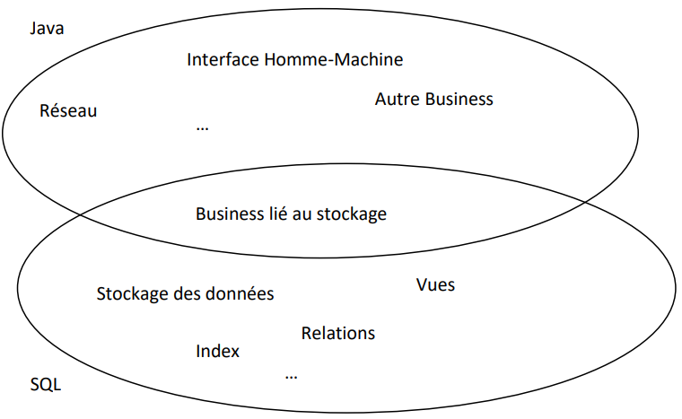Pour la partie commune, il y a des raisons diverses pour préférer Java à SQL ou inversement.
Le choix d'une approche ou d'une autre dépend donc d'abord de la présence ou pas d'une politique d'entreprise à ce niveau. En son absence, il est souvent préférable de limiter autant que possible l'usage du SQL. Ainsi, on se garde la possibilité de migrer vers un autre système et on limite la connaissance technique nécessaire à la compréhension et maintenance de l'application. On diminue aussi le travail effectué par le serveur et on augmente donc ses performances. On perd évidemment l'avantage des services avancés que la base de données est capable de fournir.
Dans le cadre de ce cours, nous nous concentrons en priorité sur l'approche maximisant l'usage du SQL puisqu'après tout c'est le thème même de ce cours. Dans la suite, nous décriron une partie des bonnes pratiques de développement.
En gardant à l'esprit que le code SQL est dépendant de la base de données, on a un intérêt fort à isoler autant que possible toute la partie du code Java qui interagit avec JDBC. Ainsi, on aura un seul endroit à mettre à jour en cas de migration. Il y a des raisons supplémentaires (architecture, modularisation, pattern) pour vouloir isoler cette partie au sein de l'application, vous verrez cela dans d'autres cours. La bonne pratique consistera donc à :
Dans cette approche, on essaie de dépendre du minimum possible de SQL. Comme la création de la base de données s'effectue une et une suele fois, on créera un script SQL (un simple fichier texte de commandes SQL) pour la création de la base de données. On se passera complètement des triggers et des procédures stockées : si ce mécanisme est nécessaire au fonctionnement de l'application, il faudra reproduire son équivalent en Java. On gardera par contre les index pour des raisons de performance. On évitera tout ce qui est spécifique à la base de données, comme les index auto-générés et les fonctionalités non standard. On pourra se contenter d'un seul rôle (public) sachant que c'est au niveau du code Java que la sécurité d'accès à la base de données sera implémentée.
Dans cette approche, on va s'abstraire autant que possible au niveau du Java du SQL sous-jacent. Ceci permettra de faire évaluer la base de données en minimisant l'impact sur la partie Java :
De plus, on peut utiliser les fonctionnalités de la base de données pour amener plus de garanties de correction :
import java.sql.Connection;
import java.sql.DriverManager;
import java.sql.PreparedStatement;
import java.sql.ResultSet;
import java.sql.SQLException;
public class ProgrammePrincipal {
private String url = "jdbc:postgresql://postgres.ipl.be/pubs2" + "?user=public&password=public";
private PreparedStatement listeAuteurs;
private PreparedStatement listeAuteursAvecNom;
private Connection conn = null;
public ProgrammePrincipal() {
try {
Class.forName("org.postgresql.Driver");
} catch (ClassNotFoundException e) {
System.out.println("Driver PostgreSQL manquant !");
System.exit(1);
}
try {
conn = DriverManager.getConnection(url);
} catch (SQLException e) {
System.out.println("Impossible de joindre le serveur !");
System.exit(1);
}
try {
listeAuteurs = conn.prepareStatement("SELECT au_fname, au_lastname" + " FROM Authors;");
listeAuteursAvecNom = conn.prepareStatement("SELECT au_lname" + " FROM Authors" + " WHERE au_fname LIKE ?;");
} catch (SQLException e) {
System.out.println("Erreur avec les requêtesSQL !");
System.exit(1);
}
}
private void listeAuteursAvecNom(String name) {
try {
listeAuteursAvecNom.setString(1, name);
try (ResultSet rs = listeAuteursAvecNom.executeQuery()) {
while (rs.next()) {
System.out.println("Prénom "+ rs.getString(1));
}
}
} catch (SQLException e) {
e.printStackTrace();
}
}
private void listeAuteurs () {
try {
try (ResulSet rs = listeAuteurs.executeQuery()) {
while (rs.next()) {
System.out.println("Nom " + rs.getString(1) + " Prénom " + rs.getString(2));
}
}
} catch (SQLException e) {
e.printStackTrace();
}
}
public void close() {
try {
conn.close();
} catch (SQLException e) {
e.printStackTrace();
}
}
public static void main(String[] args) {
ProgrammePrincipal pp = new ProgrammePrincipal();
System.out.println("Liste des auteurs");
pp.listeAuteurs();
System.out.println("Liste des auteurs dont le nom est Sheryl");
pp.listeAuteursAvecNom("Sheryl");
pp.close();
}
}